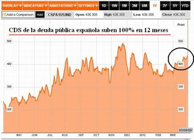
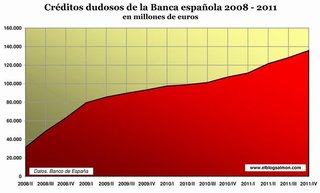
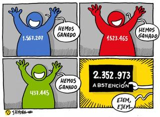
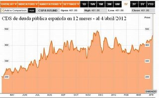
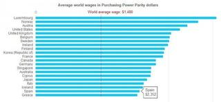

Mon, 09 Apr 2012 05:53:09 GMT
¿Qué habéis hecho en Semana Santa? La encuesta de la semana
¿Qué habéis hecho en Semana Santa? La encuesta de la semana
Ya se han terminado la Semana Santa para casi todos, y esta semana os queremos preguntar sobre lo que habéis hecho. Lo primero es agradecer vuestra participación, ya que sin vosotros esta sección no sería posible. Queremos sondear cual ha sido el comportamiento económico de los lectores durante la semana, no basado en lo que se prevé hacer, sino en lo que se ha hecho. Esperamos vuestras respuestas. En El Blog Salmón| El año pasado: El turismo en Semana Santa se hace en coche y a casa de los amigos A ver este año

Ya se han terminado la Semana Santa para casi todos, y esta semana os queremos preguntar sobre lo que habéis hecho. Lo primero es agradecer vuestra participación, ya que sin vosotros esta sección no sería posible.
Queremos sondear cual ha sido el comportamiento económico de los lectores durante la semana, no basado en lo que se prevé hacer, sino en lo que se ha hecho. Esperamos vuestras respuestas.
En El Blog Salmón| El año pasado: El turismo en Semana Santa se hace en coche y a casa de los amigos A ver este año
Fri, 06 Apr 2012 05:00:00 GMT
¿Es ético subvencionar a los sindicatos?
¿Es ético subvencionar a los sindicatos?
A medida que pasan los días vamos conociendo más detalles sobre los ajustes que se han practicado en los Presupuestos Generales del Estado para 2012. Así, los sindicatos también han pillado su porción del tijeretazo. Aunque en diciembre del pasado año ya se incluyó un recorte en las subvenciones a las centrales del 20%, finalmente el tijeretazo se ha elevado hasta el 33%. En cifras, el ajuste supone que las aportaciones a los sindicatos pasen de los 25,9 millones de euros el año pasado a tan “sólo” 17,3 millones, lo que supone un ajuste de 8,6 millones. ¿Ajuste severo? ¿Ajuste blando? Creo que lo que realmente deberíamos plantearnos es si estas subvenciones son moralmente correctas. La pérdida de popularidad que los sindicatos han sufrido en los últimos años se debe en gran medida a la politización de los mismos. Tal vez si estas subvenciones desapareciesen y estos se financiasen exclusivamente de las aportaciones de sus afiliados el panorama cambiase. Si me permitís la expresión, no tiene mucho sentido creer que la bestia muerda la mano que le da de comer. Las subvenciones a los sindicatos corrompen el concepto original de estas organizaciones y acaban con su independencia. Años atrás los sindicatos eran fuertes y gozaban del respaldo y apoyo de los trabajadores. Hoy en día esa idea ha quedado atrás y muchos les ven como una organización más al servicio de los poderosos. En la actualidad, los sindicatos presentan otro problema añadido, y es la concentración de poder en manos de UGT y CC.OO, que además mantienen año tras año a sus mismo líderes al frente. Se estima que el 70% de las subvenciones vayan a parar a manos de esta dos corporaciones, mientras que el 30% restante se repartiría entre los cerca de ochenta sindicatos minoritarios. En ocasiones me resulta curioso que critiquemos el bipartidismo político pero nunca hagamos mención al bipartidismo sindical. Pienso que igual que la existencia de dos partidos fuertes concentrando el poder no nos beneficia en absoluto, tampoco lo hace el reparto de poder sindical en manos de los dos sindicatos teóricamente más representativos. La palabra es vuestra. ¿Pierden los sindicatos su esencia en el momento en el que pasan a estar subvencionados por el Estado? En El Blog Salmón | ¿Qué apoyo tienen realmente los sindicatos para una huelga general?, ¿Porqué los sindicatos en Francia tienen más fuerza que en España?
A medida que pasan los días vamos conociendo más detalles sobre los ajustes que se han practicado en los Presupuestos Generales del Estado para 2012. Así, los sindicatos también han pillado su porción del tijeretazo. Aunque en diciembre del pasado año ya se incluyó un recorte en las subvenciones a las centrales del 20%, finalmente el tijeretazo se ha elevado hasta el 33%.
En cifras, el ajuste supone que las aportaciones a los sindicatos pasen de los 25,9 millones de euros el año pasado a tan “sólo” 17,3 millones, lo que supone un ajuste de 8,6 millones. ¿Ajuste severo? ¿Ajuste blando? Creo que lo que realmente deberíamos plantearnos es si estas subvenciones son moralmente correctas. La pérdida de popularidad que los sindicatos han sufrido en los últimos años se debe en gran medida a la politización de los mismos. Tal vez si estas subvenciones desapareciesen y estos se financiasen exclusivamente de las aportaciones de sus afiliados el panorama cambiase.
Si me permitís la expresión, no tiene mucho sentido creer que la bestia muerda la mano que le da de comer. Las subvenciones a los sindicatos corrompen el concepto original de estas organizaciones y acaban con su independencia. Años atrás los sindicatos eran fuertes y gozaban del respaldo y apoyo de los trabajadores. Hoy en día esa idea ha quedado atrás y muchos les ven como una organización más al servicio de los poderosos.
En la actualidad, los sindicatos presentan otro problema añadido, y es la concentración de poder en manos de UGT y CC.OO, que además mantienen año tras año a sus mismo líderes al frente. Se estima que el 70% de las subvenciones vayan a parar a manos de esta dos corporaciones, mientras que el 30% restante se repartiría entre los cerca de ochenta sindicatos minoritarios.
En ocasiones me resulta curioso que critiquemos el bipartidismo político pero nunca hagamos mención al bipartidismo sindical. Pienso que igual que la existencia de dos partidos fuertes concentrando el poder no nos beneficia en absoluto, tampoco lo hace el reparto de poder sindical en manos de los dos sindicatos teóricamente más representativos.
La palabra es vuestra. ¿Pierden los sindicatos su esencia en el momento en el que pasan a estar subvencionados por el Estado?
En El Blog Salmón | ¿Qué apoyo tienen realmente los sindicatos para una huelga general?, ¿Porqué los sindicatos en Francia tienen más fuerza que en España?
Thu, 05 Apr 2012 10:26:32 GMT
Movistar pierde el doble de clientes tras poner fin a las subvenciones
Movistar pierde el doble de clientes tras poner fin a las subvenciones
Parece ser que a Movistar no le ha sentado demasiado bien dejar de subvencionar terminales. Según publicó Expansión en la versión impresa de su diario, Movistar ha duplicado sus pérdidas de clientes tras dejar de ofrecer móviles subvencionados, algo que como era de esperar ha ocurrido. Esta información es un adelanto de lo que la CMT publicará más adelante y seguro que interesa y mucho a la competencia del operador azul. En total, Movistar ha perdido 118.000 líneas en marzo, el primer mes sin subvención de terminales, frente a las 58.000 que perdió en febrero o las 60.000 que se registraron como media mensual durante 2011. Además, tan sólo 70.000 clientes optaron por cambiarse a Movistar durante este mes, sin adquirir un móvil o financiándolo, lo que también supone un 40% menos que la media mensual de 2011. Estas cifras no son ninguna sorpresa, sabiendo que en este país los clientes se mueven de unas compañías a otras buscando móviles a precios asequibles, aunque ello les suponga contratar tarifas que se alejan de sus consumos reales. Tal vez por ello, Orange y Vodafone, hayan conseguido absorber gran parte de esos clientes que se han fugado de Movistar. En concreto, Orange ha tenido un balance positivo de 50.000 portabilidades y Vodafone tan sólo ha llegado a las 4.000. Habrá que ver como evoluciona el mercado de telefonía móvil. Sobre todo si tenemos en cuenta que Vodafone anunció que imitaría a Movistar y dejaría de subvencionar terminales a partir del día 10 de este mes. Orange, mientras tanto, es la única que mantiene la política de captación de clientes mediante subvenciones. Sin embargo, como ya comentamos en estas páginas, dada la situación oligopolista del mercado es cuestión de tiempo que anuncien una política similar a la de Movistar y Vodafone. En El Blog Salmón | Se acabaron los móviles subvencionados en Movistar, Vodafone se une a Movistar y acaba con los móviles subvencionados
Parece ser que a Movistar no le ha sentado demasiado bien dejar de subvencionar terminales. Según publicó Expansión en la versión impresa de su diario, Movistar ha duplicado sus pérdidas de clientes tras dejar de ofrecer móviles subvencionados, algo que como era de esperar ha ocurrido. Esta información es un adelanto de lo que la CMT publicará más adelante y seguro que interesa y mucho a la competencia del operador azul.
En total, Movistar ha perdido 118.000 líneas en marzo, el primer mes sin subvención de terminales, frente a las 58.000 que perdió en febrero o las 60.000 que se registraron como media mensual durante 2011. Además, tan sólo 70.000 clientes optaron por cambiarse a Movistar durante este mes, sin adquirir un móvil o financiándolo, lo que también supone un 40% menos que la media mensual de 2011.
Estas cifras no son ninguna sorpresa, sabiendo que en este país los clientes se mueven de unas compañías a otras buscando móviles a precios asequibles, aunque ello les suponga contratar tarifas que se alejan de sus consumos reales. Tal vez por ello, Orange y Vodafone, hayan conseguido absorber gran parte de esos clientes que se han fugado de Movistar. En concreto, Orange ha tenido un balance positivo de 50.000 portabilidades y Vodafone tan sólo ha llegado a las 4.000.
Habrá que ver como evoluciona el mercado de telefonía móvil. Sobre todo si tenemos en cuenta que Vodafone anunció que imitaría a Movistar y dejaría de subvencionar terminales a partir del día 10 de este mes. Orange, mientras tanto, es la única que mantiene la política de captación de clientes mediante subvenciones. Sin embargo, como ya comentamos en estas páginas, dada la situación oligopolista del mercado es cuestión de tiempo que anuncien una política similar a la de Movistar y Vodafone.
En El Blog Salmón | Se acabaron los móviles subvencionados en Movistar, Vodafone se une a Movistar y acaba con los móviles subvencionados
Wed, 04 Apr 2012 20:00:51 GMT
¿Amenaza la demografía al sector turístico español?
¿Amenaza la demografía al sector turístico español?
Demografia 3.0 View more presentations from Juan Otero Hoy es el día con mayor número de desplazamientos en coche del año. La Operacion Salida de Semana Santa es todo un hito del turismo español. Aprovechando la ocasión, quería traer hasta vosotros las reflexiones de un emprendedor del sector turístico, Juan Otero, especialmente vinculado a la Red. Juan se centra en la amenaza demográfica que pende sobre el sector turístico español. El sector turístico es clave en el tejido empresarial español. Quizás hoy más que nunca, dado el desplome de buena parte del resto. Por ello, conviene prestar atención a cualquier factor que pueda afectar a nuestra gallina de los huevos de oro. Ahora bien, ¿es cierto lo que expone Juan en su presentación? Sinceramente, no lo sé. Hay buena parte de las afirmaciones de Juan que me suena a amenaza maltusiana (y creo saber quién y cómo se pude aprovechar de ellos). Tengo dudas en lo correcto de algunas de las afirmaciones, me preocupan las consecuencias que se puedas derivar de alguna de las propuestas realizadas y soy escéptico ante lo que podamos hacer ante las fuerzas demográficas. Estoy con Juan en que la demografía nos condiciona mucho más allá de lo que algunos quieren pensar (¿hay alguien ahí que siga sosteniendo que el Welfare State goza de buena salud?). Lo cierto es que la presentación toca tantos puntos, abre tantos flancos, que más que exponer mis opiniones concretas a priori, condicionado el desarrollo de la conversación, me gustaría saber que impresión os ha causado a vosotros. Tenéis la palabra. ¿Es el turismo un sector para viejos? Vía | Juan Otero, Diario de un rural worker En El Blog Salmón | Análisis de la demografía tributaria, Turismo interior ¿fomentar el proteccionismo?
Demografia 3.0 View more presentations from Juan Otero
Hoy es el día con mayor número de desplazamientos en coche del año. La Operacion Salida de Semana Santa es todo un hito del turismo español. Aprovechando la ocasión, quería traer hasta vosotros las reflexiones de un emprendedor del sector turístico, Juan Otero, especialmente vinculado a la Red. Juan se centra en la amenaza demográfica que pende sobre el sector turístico español.
El sector turístico es clave en el tejido empresarial español. Quizás hoy más que nunca, dado el desplome de buena parte del resto. Por ello, conviene prestar atención a cualquier factor que pueda afectar a nuestra gallina de los huevos de oro. Ahora bien, ¿es cierto lo que expone Juan en su presentación?
Sinceramente, no lo sé. Hay buena parte de las afirmaciones de Juan que me suena a amenaza maltusiana (y creo saber quién y cómo se pude aprovechar de ellos). Tengo dudas en lo correcto de algunas de las afirmaciones, me preocupan las consecuencias que se puedas derivar de alguna de las propuestas realizadas y soy escéptico ante lo que podamos hacer ante las fuerzas demográficas. Estoy con Juan en que la demografía nos condiciona mucho más allá de lo que algunos quieren pensar (¿hay alguien ahí que siga sosteniendo que el Welfare State goza de buena salud?).
Lo cierto es que la presentación toca tantos puntos, abre tantos flancos, que más que exponer mis opiniones concretas a priori, condicionado el desarrollo de la conversación, me gustaría saber que impresión os ha causado a vosotros.
Tenéis la palabra. ¿Es el turismo un sector para viejos?
Vía | Juan Otero, Diario de un rural worker
En El Blog Salmón | Análisis de la demografía tributaria, Turismo interior ¿fomentar el proteccionismo?
Wed, 04 Apr 2012 10:23:34 GMT
Siguen las sorpresas económicas
Siguen las sorpresas económicas
Los nuevos Presupuestos Generales 2012 se han presentado y descrito ayer en el Congreso de Diputados español y, ahora que estamos viendo los detalles, están saliendo las sorpresas económicas. Una de estas ‘sorpresas’ es que los gastos financieros de la deuda superan lo generado por todas las medidas del gobierno. 28.848 millones de euros de gastos financieros frente a los 27.300 millones de euros de aumento de medidas del gobierno. Cuando estalló la crisis y se iniciaron los gastos billonarios, algunos advertimos que esa no era la forma de resolver los problemas económicos y financiero en que estábamos. Cuatro años después, muchos de los que más animaban estos gastos siguen pidiendo más de lo mismo, como si repetir lo que no ha funcionado va a darnos distintos resultados. Advertimos que esos malgastos billonarios traerían traer consecuencias negativas pero, se hicieron igual. Cuando llegaron los altos déficits estatales estos sorprendieron a muchos, aunque eran la conclusión lógica de lo que se estaba hacíendo. Muchos lo vieron como consecuencia de la crisis y que había que, no sólo continuar en el mismo camino, pero pedían hacer cada vez más. Con el tiempo, estos déficits estatales se acumularon y vinieron los aumentos en las deudas estatales que sorprendieron a muchos, aunque eran la conclusión lógica de lo que hacían. También culparon la crisis y seguían pidiendo más de lo mismo y, además, que no había que preocuparse ya que seguíamos con menos deuda que muchos de nuestros socios europeos. Como resultado de estas acumuladas deudas estatales ahora están sorprendiendo a muchos los altos costes de financiación de estas altísimas deudas estatales, aunque eran la conclusión lógica de lo que hacían. Durante cada uno de estos pasos, algunos advertimos de los peligros y de las conclusiones lógicas y perniciosas de esos pasos. Todos estos que se han sorprendido del nivel de costes financieros que se enteren, cuando se toma dinero prestado, hay que pagar las duedas y si se toma mucho dinero prestado, pues estos pagos serán muy altos. Además, si se pagan estos costes financieros a través de obtener aún más deuda, los costes financieros subirán aún más. Lo digo para que no expresen sorpresa cuando esto mismo se vea en el futuro próximo. En El Blog Salmón | El tijeretazo de 27.300 millones de euros no alcanza para pagar los intereses de la deuda, Presupuestos Generales 2012, algunos detalles y Algo no cuadra en las previsiones de ingresos de los Presupuestos Generales 2012 Imagen| Fran Carreira
Los nuevos Presupuestos Generales 2012 se han presentado y descrito ayer en el Congreso de Diputados español y, ahora que estamos viendo los detalles, están saliendo las sorpresas económicas. Una de estas ‘sorpresas’ es que los gastos financieros de la deuda superan lo generado por todas las medidas del gobierno. 28.848 millones de euros de gastos financieros frente a los 27.300 millones de euros de aumento de medidas del gobierno.
Cuando estalló la crisis y se iniciaron los gastos billonarios, algunos advertimos que esa no era la forma de resolver los problemas económicos y financiero en que estábamos. Cuatro años después, muchos de los que más animaban estos gastos siguen pidiendo más de lo mismo, como si repetir lo que no ha funcionado va a darnos distintos resultados. Advertimos que esos malgastos billonarios traerían traer consecuencias negativas pero, se hicieron igual.
Cuando llegaron los altos déficits estatales estos sorprendieron a muchos, aunque eran la conclusión lógica de lo que se estaba hacíendo. Muchos lo vieron como consecuencia de la crisis y que había que, no sólo continuar en el mismo camino, pero pedían hacer cada vez más.
Con el tiempo, estos déficits estatales se acumularon y vinieron los aumentos en las deudas estatales que sorprendieron a muchos, aunque eran la conclusión lógica de lo que hacían. También culparon la crisis y seguían pidiendo más de lo mismo y, además, que no había que preocuparse ya que seguíamos con menos deuda que muchos de nuestros socios europeos.
Como resultado de estas acumuladas deudas estatales ahora están sorprendiendo a muchos los altos costes de financiación de estas altísimas deudas estatales, aunque eran la conclusión lógica de lo que hacían.
Durante cada uno de estos pasos, algunos advertimos de los peligros y de las conclusiones lógicas y perniciosas de esos pasos.
Todos estos que se han sorprendido del nivel de costes financieros que se enteren, cuando se toma dinero prestado, hay que pagar las duedas y si se toma mucho dinero prestado, pues estos pagos serán muy altos. Además, si se pagan estos costes financieros a través de obtener aún más deuda, los costes financieros subirán aún más. Lo digo para que no expresen sorpresa cuando esto mismo se vea en el futuro próximo.
En El Blog Salmón | El tijeretazo de 27.300 millones de euros no alcanza para pagar los intereses de la deuda, Presupuestos Generales 2012, algunos detalles y Algo no cuadra en las previsiones de ingresos de los Presupuestos Generales 2012
Imagen| Fran Carreira
Wed, 04 Apr 2012 03:30:29 GMT
España cae en la trampa de la austeridad y logra batir nuevos récords
España cae en la trampa de la austeridad y logra batir nuevos récords
La tensión financiera que vive por estos días Europa no hace más que confirmar que será en España donde se librará la batalla final por el destino del euro. España está batiendo récords en varios frentes y ninguno de ellos es para crear alguna sonrisa: récord de desempleo a nivel europeo (superiores a Grecia en todos los indicadores) y también récord de caída en el Ibex que ayer se hundió por debajo de los 7.900 puntos, alcanzando un descenso de 27% en 12 meses (ver gráfica). Como si esto fuera poco, el gobierno reveló ayer que su deuda pública alcanzará este año el 79,8% del PIB frente al 68,5 registrado en 2011, la más alta de los últimos 15 años. Este aumento es fruto del cuantioso costo de los intereses por la deuda soberana, que no para de crecer. Porque mientras el BCE presta dinero a la banca al 1% de interés anual, la banca, cuando llega a prestarlo a los gobiernos lo hace al 6% o 7%. Esto demuestra el error del BCE de prestar dinero a la banca y no a los gobiernos en forma directa. Con esto facilita el desapalancamiento de la banca, pero hunde a los países. Lo más insólito, es que el costo de los intereses (28.848 millones de euros), es mayor a todo el ajuste presupuestario (27.300 millones de euros). Y todo por mantener en pie a la banca. Pese a que la proporción deuda/pib de España es menor a la de Francia o Alemania, y está por debajo de la media europea, toda la presión se dirige a España porque el gobierno ha sido incapaz de encarar el problema de fondo: la burbuja inmobiliaria y la cuantiosa deuda privada. Esto sumerge a España en un derrotero fatal donde el desempleo seguirá aumentando y la deuda, vía impago y morosidad, también. Como España es demasiado grande para caer, se estima que antes de fin de año deberá pedir el rescate de la troika, que implicará la intervención de la UE, el BCE y el FMI en toda se estructura de gobierno. Aumenta la prima de riesgo y la morosidad Los costos de la deuda de España han ido en aumento, como muestra esta gráfica de los CDS. Si durante la mayor parte del año pasado, los rendimientos de los bonos españoles estaban por debajo de los de Italia, ahora la situación se ha invertido: Los rendimientos de los bonos de Italia han caído a alrededor del 5 por ciento, mientras los de España llegan al 5,5 por ciento, y siguen en aumento. Lo que no deja de caer son las estimaciones de la contracción que vivirá España este año. Si se pensaba que la economía se deslizaría un -1%, con los nuevos datos la contracción puede llegar al -3%. La escalada de la deuda privada y las tasas de desempleo, junto a un sistema bancario débil y a una caída en el valor de la vivienda que superará el 10% este año, son un recordatorio de que la crisis en la zona euro está lejos de terminar. España está de vuelta en la recesión y no faltan quienes comienzan a sugerir la salida de España del euro, como Nouriel Roubini. De ahí que el rescate de la troika sólo es cuestión de tiempo, ese tiempo que le gusta tomarse a los líderes europeos para actuar cuando el incendio está declarado. Pese a que la debilidad de la banca española es evidente y se sabe que seguirá sufriendo por el colapso de la vivienda, y el grave riesgo de impago de los préstamos hipotecarios. La morosidad de estos préstamos pasó del 1% en 2008 al 7,9% actual, otro récord español. El valor de los préstamos potencialmente sin fondos llega a 136 mil millones de euros, equivalente al 13 por ciento del PIB. En todo caso, con los planes de austeridad estos récords serán ampliamente superados. En El Blog Salmón | ¿Es España el mayor dolor de cabeza de Europa? Las tensiones en el mercado financiero español: aumenta la morosidad y disminuye el crédito
La tensión financiera que vive por estos días Europa no hace más que confirmar que será en España donde se librará la batalla final por el destino del euro. España está batiendo récords en varios frentes y ninguno de ellos es para crear alguna sonrisa: récord de desempleo a nivel europeo (superiores a Grecia en todos los indicadores) y también récord de caída en el Ibex que ayer se hundió por debajo de los 7.900 puntos, alcanzando un descenso de 27% en 12 meses (ver gráfica).
Como si esto fuera poco, el gobierno reveló ayer que su deuda pública alcanzará este año el 79,8% del PIB frente al 68,5 registrado en 2011, la más alta de los últimos 15 años. Este aumento es fruto del cuantioso costo de los intereses por la deuda soberana, que no para de crecer. Porque mientras el BCE presta dinero a la banca al 1% de interés anual, la banca, cuando llega a prestarlo a los gobiernos lo hace al 6% o 7%. Esto demuestra el error del BCE de prestar dinero a la banca y no a los gobiernos en forma directa. Con esto facilita el desapalancamiento de la banca, pero hunde a los países. Lo más insólito, es que el costo de los intereses (28.848 millones de euros), es mayor a todo el ajuste presupuestario (27.300 millones de euros). Y todo por mantener en pie a la banca.
Pese a que la proporción deuda/pib de España es menor a la de Francia o Alemania, y está por debajo de la media europea, toda la presión se dirige a España porque el gobierno ha sido incapaz de encarar el problema de fondo: la burbuja inmobiliaria y la cuantiosa deuda privada. Esto sumerge a España en un derrotero fatal donde el desempleo seguirá aumentando y la deuda, vía impago y morosidad, también. Como España es demasiado grande para caer, se estima que antes de fin de año deberá pedir el rescate de la troika, que implicará la intervención de la UE, el BCE y el FMI en toda se estructura de gobierno.
Aumenta la prima de riesgo y la morosidad

Los costos de la deuda de España han ido en aumento, como muestra esta gráfica de los CDS. Si durante la mayor parte del año pasado, los rendimientos de los bonos españoles estaban por debajo de los de Italia, ahora la situación se ha invertido: Los rendimientos de los bonos de Italia han caído a alrededor del 5 por ciento, mientras los de España llegan al 5,5 por ciento, y siguen en aumento. Lo que no deja de caer son las estimaciones de la contracción que vivirá España este año. Si se pensaba que la economía se deslizaría un -1%, con los nuevos datos la contracción puede llegar al -3%.
La escalada de la deuda privada y las tasas de desempleo, junto a un sistema bancario débil y a una caída en el valor de la vivienda que superará el 10% este año, son un recordatorio de que la crisis en la zona euro está lejos de terminar. España está de vuelta en la recesión y no faltan quienes comienzan a sugerir la salida de España del euro, como Nouriel Roubini.

De ahí que el rescate de la troika sólo es cuestión de tiempo, ese tiempo que le gusta tomarse a los líderes europeos para actuar cuando el incendio está declarado. Pese a que la debilidad de la banca española es evidente y se sabe que seguirá sufriendo por el colapso de la vivienda, y el grave riesgo de impago de los préstamos hipotecarios. La morosidad de estos préstamos pasó del 1% en 2008 al 7,9% actual, otro récord español. El valor de los préstamos potencialmente sin fondos llega a 136 mil millones de euros, equivalente al 13 por ciento del PIB. En todo caso, con los planes de austeridad estos récords serán ampliamente superados.
En El Blog Salmón | ¿Es España el mayor dolor de cabeza de Europa?
Las tensiones en el mercado financiero español: aumenta la morosidad y disminuye el crédito
Tue, 03 Apr 2012 15:15:00 GMT
Presupuestos Generales 2012, algunos detalles
Presupuestos Generales 2012, algunos detalles
Hoy se han conocido los detalles de los Presupuestos Generales del Estado 2012. Lo que tuvimos el viernes fue un adelante de los recortes y principales medidas, pero hoy tenemos todos los detalles y hay algunas cosas que sorprenden bastante. Me quedo sobretodo con algunos detalles que me parecen poco reflexionados. Tantos meses preparando estos presupuestos para que ahora salgan cosas como las que voy a comentar. Sinceramente, decepcionantes en muchos aspectos.
La mitad de los presupuestos se los comen pensiones, desempleo e intereses de la deuda. Esto es, simplemente, inevitable. Pensiones es un tema que no parará de subir y más aún con la subida del IPC que aplicó el Gobierno nada más llegar al poder. Desempleo, con el paro subiendo, también sube. Y a más deuda, más intereses. La reducción del Presupuesto ha hecho que estos conceptos pasen a representar el 56,8% de los presupuestos.
Las becas para estudiar se reducen un 11,6%. Pero esta reducción no es igual en todos los niveles. Por ejemplo, en educación universitaria se reducen un 62,5%. En este punto, en lugar de recortar, tendrían que diseñar mejor este tipo de ayudas. Subir las tasas y las becas de forma conjunta, y dedicar más recursos públicos a la educación infantil, que es donde realmente se puede lograr mejorar la igualdad de oportunidades.
El Ministerio de Fomento pasa a tener menos presupuesto que el de Defensa. Eso sí, una gran parte del presupuesto de Defensa es para pagar deudas pendientes, que alcanzan la increíble cifra de 25.000 millones de euros. Realmente en Defensa tienen el agua al cuello, pero no deja de sorprender que nos vayamos a gastar más en Defensa que en infraestructuras. Por cierto, Fomento tiene menos presupuesto que lo que ha comprometido a gastar en Alta Velocidad este año. Algunas obras (si no muchas) se van a parar.
¿De verdad seguimos necesitando un Ministerio de Cultura? Para el poco presupuesto que tiene, menos de 1.000 millones de euros, es para planteárselo. El gran recorte se lo lleva las ayudas al cine. Pero me sorprende que este presupuesto no se deje a cero cuando otras cosas, como el Plan Nacional sobre Sida, se han quedado sin presupuesto alguno.
Interior sigue con el presupuesto prácticamente igual. El tema del recorte en seguridad parece muy impopular, pero hay que ser conscientes de dos cosas: primero, ETA ya no está; segundo, somos uno de los países más seguros de la UE (no hay más que mirar las cifras de homicidios del Eurostat). Somos un país con un gasto excesivo en Seguridad, y si se han asumido recortes en otras partidas, también hay que planteárselas aquí (por supuesto con criterio, pero esto debe hacerse en todo lo que se diseña).
Las transferencias a las Comunidades Autónomas se mantienen e incluso crecen levemente. La condición es que cumplan sus objetivos de déficit. Me parece bien, pero aún así hay que reformar la financiación autonómica y que dejen de tener incentivos para gastar lo que no tienen.
Le meten la tijera a muchas cosas, pero no tocan el sueldo del Presidente del Gobierno ni de los Ministros. Ya lo recortó ZP en su día, pero debería continuar con el resto de cargos políticos (hoy en día un secretario de Estado gana más que un Ministro). La casa real sufre un recorte de un 2%, cuando el recorte de los Ministerios ha sido mucho más. Recortar en estas partidas no tiene mucho impacto, la verdad, pero mandaría un mensaje, aquí nos apretamos todos. Y el mensaje que recibimos es que no es así.
La investigación se lleva un palo importante, otra vez. En esta ocasión un 34%. Para mi un error muy importante. La inversión en I+D nos garantiza un buen futuro, pero ahora prima la visión cortoplacista, cosa, que por otra parte, nos metió en esta crisis.
Creo que ha habido recortes sin ton ni son, poco reflexionados y que además nos llevarán a una menor actividad económica que hagan que las estimaciones de recaudación estén sobrevaloradas. Los Presupuestos eran una ocasión perfecta para hacer reformas estructurales, pensar en qué debe gastar dinero España en los próximos años, y no se ha aprovechado. Otra oportunidad perdida. En El Blog Salmón | Presupuestos Generales del Estado 2012 Más información | Ministerio de Hacienda Imagen | Images of Money
Hoy se han conocido los detalles de los Presupuestos Generales del Estado 2012. Lo que tuvimos el viernes fue un adelante de los recortes y principales medidas, pero hoy tenemos todos los detalles y hay algunas cosas que sorprenden bastante.
Me quedo sobretodo con algunos detalles que me parecen poco reflexionados. Tantos meses preparando estos presupuestos para que ahora salgan cosas como las que voy a comentar. Sinceramente, decepcionantes en muchos aspectos.
- La mitad de los presupuestos se los comen pensiones, desempleo e intereses de la deuda. Esto es, simplemente, inevitable. Pensiones es un tema que no parará de subir y más aún con la subida del IPC que aplicó el Gobierno nada más llegar al poder. Desempleo, con el paro subiendo, también sube. Y a más deuda, más intereses. La reducción del Presupuesto ha hecho que estos conceptos pasen a representar el 56,8% de los presupuestos.
- Las becas para estudiar se reducen un 11,6%. Pero esta reducción no es igual en todos los niveles. Por ejemplo, en educación universitaria se reducen un 62,5%. En este punto, en lugar de recortar, tendrían que diseñar mejor este tipo de ayudas. Subir las tasas y las becas de forma conjunta, y dedicar más recursos públicos a la educación infantil, que es donde realmente se puede lograr mejorar la igualdad de oportunidades.
-
El Ministerio de Fomento pasa a tener menos presupuesto que el de Defensa. Eso sí, una gran parte del presupuesto de Defensa es para pagar deudas pendientes, que alcanzan la increíble cifra de 25.000 millones de euros. Realmente en Defensa tienen el agua al cuello, pero no deja de sorprender que nos vayamos a gastar más en Defensa que en infraestructuras. Por cierto, Fomento tiene menos presupuesto que lo que ha comprometido a gastar en Alta Velocidad este año. Algunas obras (si no muchas) se van a parar.
- ¿De verdad seguimos necesitando un Ministerio de Cultura? Para el poco presupuesto que tiene, menos de 1.000 millones de euros, es para planteárselo. El gran recorte se lo lleva las ayudas al cine. Pero me sorprende que este presupuesto no se deje a cero cuando otras cosas, como el Plan Nacional sobre Sida, se han quedado sin presupuesto alguno.
- Interior sigue con el presupuesto prácticamente igual. El tema del recorte en seguridad parece muy impopular, pero hay que ser conscientes de dos cosas: primero, ETA ya no está; segundo, somos uno de los países más seguros de la UE (no hay más que mirar las cifras de homicidios del Eurostat). Somos un país con un gasto excesivo en Seguridad, y si se han asumido recortes en otras partidas, también hay que planteárselas aquí (por supuesto con criterio, pero esto debe hacerse en todo lo que se diseña).
- Las transferencias a las Comunidades Autónomas se mantienen e incluso crecen levemente. La condición es que cumplan sus objetivos de déficit. Me parece bien, pero aún así hay que reformar la financiación autonómica y que dejen de tener incentivos para gastar lo que no tienen.
- Le meten la tijera a muchas cosas, pero no tocan el sueldo del Presidente del Gobierno ni de los Ministros. Ya lo recortó ZP en su día, pero debería continuar con el resto de cargos políticos (hoy en día un secretario de Estado gana más que un Ministro). La casa real sufre un recorte de un 2%, cuando el recorte de los Ministerios ha sido mucho más. Recortar en estas partidas no tiene mucho impacto, la verdad, pero mandaría un mensaje, aquí nos apretamos todos. Y el mensaje que recibimos es que no es así.
- La investigación se lleva un palo importante, otra vez. En esta ocasión un 34%. Para mi un error muy importante. La inversión en I+D nos garantiza un buen futuro, pero ahora prima la visión cortoplacista, cosa, que por otra parte, nos metió en esta crisis.
Creo que ha habido recortes sin ton ni son, poco reflexionados y que además nos llevarán a una menor actividad económica que hagan que las estimaciones de recaudación estén sobrevaloradas. Los Presupuestos eran una ocasión perfecta para hacer reformas estructurales, pensar en qué debe gastar dinero España en los próximos años, y no se ha aprovechado. Otra oportunidad perdida.
En El Blog Salmón | Presupuestos Generales del Estado 2012
Más información | Ministerio de Hacienda
Imagen | Images of Money
Tue, 03 Apr 2012 12:47:31 GMT
El drama nacional continúa: 38.769 parados más en marzo
El drama nacional continúa: 38.769 parados más en marzo
El paro ha aumentado en 38.769 personas durante el mes de marzo, lo que supone un alza del 0,82% con respecto al mes anterior y el octavo mes consecutivo de ascenso. El incremento sitúa en la escalofriante cifra de 4.750.867 personas el total de parados inscritos en las listas de los Servicios Públicos de Empleo, 417.198 desempleados más que hace exactamente un año. Sin embargo, la afiliación a la Seguridad Social registra una leve subida de 5.419 nuevos trabajadores, poniendo fin a la racha negativa iniciada en el mes de julio. No obstante, hay que matizar que desde el año 2001, y salvo en 2009, siempre se han registrado ascensos del número de afiliados a la Seguridad Social durante los meses de marzo. Es más, el pequeño ascenso del 0,03% registrado este mes es el menor de los últimos once años. El paro ha subido en todos los sectores económicos: en agricultura sube en 4,882 personas (+2,84%), en industria en 4.988 parados (+0,93%) y en servicios en 15.062 desempleados (+0,54%). Del mismo modo, el paro en jóvenes menores de 25 años continúa su ascenso incrementándose en 7.037 personas, lo que supone un 1,40% más que en el mes de febrero. No obstante, han sido tres las comunidades que consiguieron reducir su número de desempleados: Cataluña, con un descenso de 3,701 personas; Baleares, con 2,230 parados menos; y Navarra, con un descenso de 392 personas. Las catorce comunidades restantes han incrementado sus parados, situándose Andalucía a la cabeza con sus 12,538 nuevos desocupados. Estas cifras ponen de manifiesto que el desempleo en nuestro país se ha convertido en un auténtico drama nacional, con un mercado laboral inflexible y una nueva reforma laboral que, aunque aún es pronto para evaluarla, me temo que resultará insuficiente para resolver el problema. Más Información | Ministerio de Trabajo En El Blog Salmón | El paro en febrero sube en 112.000 personas hasta los 4,7 millones de parados
%2016.01.09.png)
El paro ha aumentado en 38.769 personas durante el mes de marzo, lo que supone un alza del 0,82% con respecto al mes anterior y el octavo mes consecutivo de ascenso. El incremento sitúa en la escalofriante cifra de 4.750.867 personas el total de parados inscritos en las listas de los Servicios Públicos de Empleo, 417.198 desempleados más que hace exactamente un año.
Sin embargo, la afiliación a la Seguridad Social registra una leve subida de 5.419 nuevos trabajadores, poniendo fin a la racha negativa iniciada en el mes de julio. No obstante, hay que matizar que desde el año 2001, y salvo en 2009, siempre se han registrado ascensos del número de afiliados a la Seguridad Social durante los meses de marzo. Es más, el pequeño ascenso del 0,03% registrado este mes es el menor de los últimos once años.
El paro ha subido en todos los sectores económicos: en agricultura sube en 4,882 personas (+2,84%), en industria en 4.988 parados (+0,93%) y en servicios en 15.062 desempleados (+0,54%). Del mismo modo, el paro en jóvenes menores de 25 años continúa su ascenso incrementándose en 7.037 personas, lo que supone un 1,40% más que en el mes de febrero.
No obstante, han sido tres las comunidades que consiguieron reducir su número de desempleados: Cataluña, con un descenso de 3,701 personas; Baleares, con 2,230 parados menos; y Navarra, con un descenso de 392 personas. Las catorce comunidades restantes han incrementado sus parados, situándose Andalucía a la cabeza con sus 12,538 nuevos desocupados.
Estas cifras ponen de manifiesto que el desempleo en nuestro país se ha convertido en un auténtico drama nacional, con un mercado laboral inflexible y una nueva reforma laboral que, aunque aún es pronto para evaluarla, me temo que resultará insuficiente para resolver el problema.
Más Información | Ministerio de Trabajo
En El Blog Salmón | El paro en febrero sube en 112.000 personas hasta los 4,7 millones de parados
Tue, 03 Apr 2012 04:00:00 GMT
Los precios de la luz y del tabaco van para arriba
Los precios de la luz y del tabaco van para arriba
De veras que no me explico cómo pretenden reactivar el consumo si los precios no paran de subir. Según la organización de consumidores Facua, en abril de 2007, un usuario medio pagaba 48,59 euros mensuales por el recibo de la luz. Hoy, cinco años después, la factura media es de 73,99 euros, un 52,3% más. Si además tenemos en cuenta la subida del 7% anunciada por el Gobierno, la factura se disparará hasta los 79,17 euros de media, lo que supondrá un incremento del 62,9% en cinco años. Así, en estos cinco años el recibo de la luz se ha encarecido en 30,58 euros mensuales, nada menos que 366,95 euros al año, casi nada. Pero la luz no es lo único que seguirá subiendo, ya que el precio del tabaco también podría subir entre 20 y 25 céntimos por cajetilla tras el cambio en los impuestos especiales aprobado el viernes por el Consejo de Ministros. Y muchos pensaréis: “Pues que no fumen”. Vale, pero no hay derecho a que los impuestos supongan actualmente cerca del 80% del precio del tabaco. Lo miren como lo miren, es una barbaridad. Y es que la cruzada contra el tabaco (que no contra su recaudación) comenzó hace ya un tiempo cuando Elena Salgado, entonces ministra de sanidad, aprobó una dura ley antitabaco que consiguió reducir las ventas de cajetillas del mismo en un 25% en sólo seis meses. Esta ley trajo consigo una caída en la recaudación por la bajada del consumo, lo cual podría compensarse con los 150 millones de euros más que el Estado pretende recaudar con esta nueva subida. Y por si fuera poco también suben los precios de la combustibles, de los impuestos, del gas, de las entradas de cine, de los alimentos básicos, de los billetes de avión, de los coches usados y un largo etcétera. Me remito a la frase con la que comencé el artículo: ¿esta es la forma con la que el gobierno pretende reactivar el consumo? En El Blog Salmón | Subida de impuestos al tabaco: por cada euro que te gastas en tabaco, 84 céntimos son impuestos, La insaciable avaricia de las eléctricas Imagen | Libertinus
De veras que no me explico cómo pretenden reactivar el consumo si los precios no paran de subir. Según la organización de consumidores Facua, en abril de 2007, un usuario medio pagaba 48,59 euros mensuales por el recibo de la luz. Hoy, cinco años después, la factura media es de 73,99 euros, un 52,3% más.
Si además tenemos en cuenta la subida del 7% anunciada por el Gobierno, la factura se disparará hasta los 79,17 euros de media, lo que supondrá un incremento del 62,9% en cinco años. Así, en estos cinco años el recibo de la luz se ha encarecido en 30,58 euros mensuales, nada menos que 366,95 euros al año, casi nada.
Pero la luz no es lo único que seguirá subiendo, ya que el precio del tabaco también podría subir entre 20 y 25 céntimos por cajetilla tras el cambio en los impuestos especiales aprobado el viernes por el Consejo de Ministros. Y muchos pensaréis: “Pues que no fumen”. Vale, pero no hay derecho a que los impuestos supongan actualmente cerca del 80% del precio del tabaco. Lo miren como lo miren, es una barbaridad.
Y es que la cruzada contra el tabaco (que no contra su recaudación) comenzó hace ya un tiempo cuando Elena Salgado, entonces ministra de sanidad, aprobó una dura ley antitabaco que consiguió reducir las ventas de cajetillas del mismo en un 25% en sólo seis meses. Esta ley trajo consigo una caída en la recaudación por la bajada del consumo, lo cual podría compensarse con los 150 millones de euros más que el Estado pretende recaudar con esta nueva subida.
Y por si fuera poco también suben los precios de la combustibles, de los impuestos, del gas, de las entradas de cine, de los alimentos básicos, de los billetes de avión, de los coches usados y un largo etcétera. Me remito a la frase con la que comencé el artículo: ¿esta es la forma con la que el gobierno pretende reactivar el consumo?
En El Blog Salmón | Subida de impuestos al tabaco: por cada euro que te gastas en tabaco, 84 céntimos son impuestos, La insaciable avaricia de las eléctricas
Imagen | Libertinus
Mon, 02 Apr 2012 14:15:00 GMT
¿Qué medidas harían aflorar el dinero negro? La pregunta de la semana
¿Qué medidas harían aflorar el dinero negro? La pregunta de la semana
El viernes pasado en Consejo de Ministros se aprobó la polémica amnistía fiscal para hacer aflorar el dinero negro. La medida es muy controvertida y parece que no gusta a casi nadie. Ante esta situación queremos hacer la siguiente pregunta a los lectores: ¿Qué medidas harían aflorar el dinero negro? Respecto a la pregunta de la semana pasada, acerca de los “hispabonos”, la respuesta más valorada ha sido la de Guifré Badosa, que dice así: Desde mi punto de vista, que será algo más simplificado que Enrique, no considero que sea una buena idea, me explico, en Catalunya (donde vivo) ya se han hecho 3 emisiones de bonos (contando estos que ahora vienen en mayo) y se supone que se debe reducir el déficit.. ¿hola? ¿con bonos al 4.75 y 5%? Si cada vez que llega el vencimiento tienen que hacer una nueva remesa para pagar los que ahora vencen.. esto es el cuento del “Roberto y las cabras” no hace falta ser un economista para ver que no tiene buen futuro esto. Es interesante ya que permite que ciudadanos de a pie sin necesidad de una gran fortuna (desde 1.000€) puedan invertir con un interés muy tentador, pero no soluciona nada y en el caso de que pase como las preferentes? Yo aún he tenido suerte y mi entidad me mantiene el depósito solo que con un interés mucho más bajo y a vencimiento 4 años.. pero mantengo el dinero; quien nos dice que no acabamos intervenidos por Europa como Grecia y dicen “los bonos no se pagan hasta x tiempo porqué no hay dinero” o que di rectamente no los paguen.. ¿¿entonces qué??
En El Blog Salmón Respuestas | ¿Qué medidas harían aflorar el dinero negro?

El viernes pasado en Consejo de Ministros se aprobó la polémica amnistía fiscal para hacer aflorar el dinero negro. La medida es muy controvertida y parece que no gusta a casi nadie. Ante esta situación queremos hacer la siguiente pregunta a los lectores:
¿Qué medidas harían aflorar el dinero negro?
Respecto a la pregunta de la semana pasada, acerca de los “hispabonos”, la respuesta más valorada ha sido la de Guifré Badosa, que dice así:
Desde mi punto de vista, que será algo más simplificado que Enrique, no considero que sea una buena idea, me explico, en Catalunya (donde vivo) ya se han hecho 3 emisiones de bonos (contando estos que ahora vienen en mayo) y se supone que se debe reducir el déficit.. ¿hola? ¿con bonos al 4.75 y 5%? Si cada vez que llega el vencimiento tienen que hacer una nueva remesa para pagar los que ahora vencen.. esto es el cuento del “Roberto y las cabras” no hace falta ser un economista para ver que no tiene buen futuro esto. Es interesante ya que permite que ciudadanos de a pie sin necesidad de una gran fortuna (desde 1.000€) puedan invertir con un interés muy tentador, pero no soluciona nada y en el caso de que pase como las preferentes? Yo aún he tenido suerte y mi entidad me mantiene el depósito solo que con un interés mucho más bajo y a vencimiento 4 años.. pero mantengo el dinero; quien nos dice que no acabamos intervenidos por Europa como Grecia y dicen “los bonos no se pagan hasta x tiempo porqué no hay dinero” o que di rectamente no los paguen.. ¿¿entonces qué??
En El Blog Salmón Respuestas | ¿Qué medidas harían aflorar el dinero negro?
Mon, 02 Apr 2012 11:37:36 GMT
Nuevo récord del desempleo en zona euro: llega a 10,8% y en España a 23,6%
Nuevo récord del desempleo en zona euro: llega a 10,8% y en España a 23,6%
La tasa de desempleo en la eurozona subió a 10,8% en febrero, desde 10,7% en enero, el nivel más alto en al menos 14 años (los datos sólo se remontan a octubre de 1997). En la actualidad hay más de 17 millones de personas sin empleo en los 17 países de la zona del euro. La gráfica muestra el incremento del desempleo en España, Grecia, Portugal e Irlanda. El panorama no es mucho mejor para los 27 países de la Unión Europea, donde la tasa de desempleo se elevó a 10,2% en febrero desde 10,1% en enero. Esto indica que en la actualidad hay 24,6 millones de personas sin empleo en los 27 países miembros de la UE. Todo indica que Europa se dirige a un callejón sin salida pues los actuales planes de austeridad no harán más que profundizar la crisis y el desempleo. La tasa de desempleo juvenil alcanzó el 21,6% en la eurozona, desde el 21,5% en enero, y llega al 22,4% al conjunto de toda la Unión Europea. Como de costumbre, las tasas de desempleo mostraron marcadas diferencias entre los Estados miembros. Las tasas de desempleo más bajas se registraron en Austria (4,2%), Países Bajos (4,9%), Luxemburgo (5,2%) y Alemania (5,7%). España sigue siendo el país con la mayor tasa de desempleo de la eurozona y lidera en las tres categorías: un paro de 50,5% entre los jóvenes; 23,3% en desempleo masculino y 23,9% en desempleo femenino. Todo esto confirma lo que hemos sostenido aquí y aquí: en España se librará la batalla final por el destino del euro. Más información | Eurostat En El Blog Salmón | Los planes de austeridad conducen al desastre

La tasa de desempleo en la eurozona subió a 10,8% en febrero, desde 10,7% en enero, el nivel más alto en al menos 14 años (los datos sólo se remontan a octubre de 1997). En la actualidad hay más de 17 millones de personas sin empleo en los 17 países de la zona del euro. La gráfica muestra el incremento del desempleo en España, Grecia, Portugal e Irlanda.
El panorama no es mucho mejor para los 27 países de la Unión Europea, donde la tasa de desempleo se elevó a 10,2% en febrero desde 10,1% en enero. Esto indica que en la actualidad hay 24,6 millones de personas sin empleo en los 27 países miembros de la UE. Todo indica que Europa se dirige a un callejón sin salida pues los actuales planes de austeridad no harán más que profundizar la crisis y el desempleo.
La tasa de desempleo juvenil alcanzó el 21,6% en la eurozona, desde el 21,5% en enero, y llega al 22,4% al conjunto de toda la Unión Europea. Como de costumbre, las tasas de desempleo mostraron marcadas diferencias entre los Estados miembros. Las tasas de desempleo más bajas se registraron en Austria (4,2%), Países Bajos (4,9%), Luxemburgo (5,2%) y Alemania (5,7%).
España sigue siendo el país con la mayor tasa de desempleo de la eurozona y lidera en las tres categorías: un paro de 50,5% entre los jóvenes; 23,3% en desempleo masculino y 23,9% en desempleo femenino. Todo esto confirma lo que hemos sostenido aquí y aquí: en España se librará la batalla final por el destino del euro.
Más información | Eurostat
En El Blog Salmón | Los planes de austeridad conducen al desastre
Mon, 02 Apr 2012 04:00:00 GMT
¿Qué te parecen los PGE 2012?
¿Qué te parecen los PGE 2012?
Ya se han presentado los Presupuestos Generales del Estado para 2012 y queremos conocer la opinión de lectores. Lo primero es agradecer vuestra participación, ya que sin vosotros esta sección no sería posible. Queremos saber qué os parecen los presupuestos y sobretodo la opinión que os merece la medida más polémica, la amnistía fiscal a cambio de un 10% de multa. Y también si creéis que esto servirá para atajar el déficit. Esperamos vuestras respuestas.
Ya se han presentado los Presupuestos Generales del Estado para 2012 y queremos conocer la opinión de lectores. Lo primero es agradecer vuestra participación, ya que sin vosotros esta sección no sería posible.
Queremos saber qué os parecen los presupuestos y sobretodo la opinión que os merece la medida más polémica, la amnistía fiscal a cambio de un 10% de multa. Y también si creéis que esto servirá para atajar el déficit. Esperamos vuestras respuestas.
Sat, 31 Mar 2012 20:06:35 GMT
La situación política en Andalucía es apocalíptica
La situación política en Andalucía es apocalíptica
Con la resaca de la huelga general aún en mente creo que hay un asunto que no debería quedarse en el tintero y al que deberíamos dedicarle un análisis: las elecciones en Andalucía. Ante todo, he de reconocer que el resultado me pilló, como a muchos, totalmente por sorpresa. Y es que pocas veces una victoria electoral ha sido tan amarga y una derrota tan sabrosa. No había más que ver las caras de Griñán y Arenas tras conocerse los resultados para darnos cuenta de que algo extraño pasaba en Andalucía, mi tierra. Con este artículo no pretendo laurear a unos ni crucificar a otros, tan sólo dar pie a la reflexión. El paro en Andalucía alcanza el 31%, cifra que no se me va de la cabeza y que desde un punto de vista económico es totalmente insostenible. No conozco país desarrollado que con este brutal desempleo consiga mantener su estructura básica como país en pie. Y sin embargo esta cifra no ha sido capaz de derrocar al partido socialista andaluz. Griñán y su aparato clientelar seguirán gestionando el futuro de los andaluces por cuatro años más. Muchos blogs señalan que estas elecciones son un mensaje para Rajoy. Yo discrepo totalmente con ellos. Para mí, el único mensaje que los andaluces han lanzado es que no hay mensaje. Andalucía se encuentra totalmente girada hacia la izquierda, casi de una forma irracional. Ni ha importado el 31% de paro ni tampoco lo ha hecho el caso del fondo de reptiles: el escándalo de corrupción de los ERE, que muestran una presunta red de corrupción política vinculada a altos cargos de la Junta de Andalucía. Nada ha importado en Andalucía. La estrategia de Griñán de apurar la legislatura para aprovecharse del desgaste de Rajoy ha resultado ser todo un éxito. Estoy de acuerdo en que la alternativa no era la mejor: Arenas no es un buen político y su feeling con los andaluces es casi nulo. Sin embargo, se podría haber votado en blanco, a IU, a UPyD o incluso al partido antitaurino con tal de quitar de en medio a un gobierno socialista que ha dejado Andalucía arruinada y convertida en una de las regiones más pobres de Europa. ¿Qué tiene que pasar en Andalucía para que haya un cambio? Y cuando digo cambio, quiero decir lo que sea. ¿Más paro? ¿Más corrupción? ¿Acaso la gente no se da cuenta de que si la situación a nivel nacional es catastrófica en Andalucía lo es apocalíptica? Y no, ni cuestiono la democracia ni tampoco cuestiono el buen saber de los andaluces a la hora de votar. Sí cuestiono, le pese a quién le pese, la irracionalidad que nos obliga a los andaluces a seguir viviendo esta pesadilla política. En El Blog Salmón | Andalucía: 29,68% de paro, no hay palabras…(mapa autonómico), El imparable avance del paro desde el sur al norte en España Imagen | JRMora

Con la resaca de la huelga general aún en mente creo que hay un asunto que no debería quedarse en el tintero y al que deberíamos dedicarle un análisis: las elecciones en Andalucía. Ante todo, he de reconocer que el resultado me pilló, como a muchos, totalmente por sorpresa. Y es que pocas veces una victoria electoral ha sido tan amarga y una derrota tan sabrosa. No había más que ver las caras de Griñán y Arenas tras conocerse los resultados para darnos cuenta de que algo extraño pasaba en Andalucía, mi tierra.
Con este artículo no pretendo laurear a unos ni crucificar a otros, tan sólo dar pie a la reflexión. El paro en Andalucía alcanza el 31%, cifra que no se me va de la cabeza y que desde un punto de vista económico es totalmente insostenible. No conozco país desarrollado que con este brutal desempleo consiga mantener su estructura básica como país en pie. Y sin embargo esta cifra no ha sido capaz de derrocar al partido socialista andaluz. Griñán y su aparato clientelar seguirán gestionando el futuro de los andaluces por cuatro años más.
Muchos blogs señalan que estas elecciones son un mensaje para Rajoy. Yo discrepo totalmente con ellos. Para mí, el único mensaje que los andaluces han lanzado es que no hay mensaje. Andalucía se encuentra totalmente girada hacia la izquierda, casi de una forma irracional. Ni ha importado el 31% de paro ni tampoco lo ha hecho el caso del fondo de reptiles: el escándalo de corrupción de los ERE, que muestran una presunta red de corrupción política vinculada a altos cargos de la Junta de Andalucía.
Nada ha importado en Andalucía. La estrategia de Griñán de apurar la legislatura para aprovecharse del desgaste de Rajoy ha resultado ser todo un éxito. Estoy de acuerdo en que la alternativa no era la mejor: Arenas no es un buen político y su feeling con los andaluces es casi nulo. Sin embargo, se podría haber votado en blanco, a IU, a UPyD o incluso al partido antitaurino con tal de quitar de en medio a un gobierno socialista que ha dejado Andalucía arruinada y convertida en una de las regiones más pobres de Europa.
¿Qué tiene que pasar en Andalucía para que haya un cambio? Y cuando digo cambio, quiero decir lo que sea. ¿Más paro? ¿Más corrupción? ¿Acaso la gente no se da cuenta de que si la situación a nivel nacional es catastrófica en Andalucía lo es apocalíptica? Y no, ni cuestiono la democracia ni tampoco cuestiono el buen saber de los andaluces a la hora de votar. Sí cuestiono, le pese a quién le pese, la irracionalidad que nos obliga a los andaluces a seguir viviendo esta pesadilla política.
En El Blog Salmón | Andalucía: 29,68% de paro, no hay palabras…(mapa autonómico), El imparable avance del paro desde el sur al norte en España
Imagen | JRMora
Sat, 07 Apr 2012 04:49:39 GMT
Los lectores no dan el visto bueno a los Presupuestos Generales de 2012
Los lectores no dan el visto bueno a los Presupuestos Generales de 2012
Hoy os traemos los resultados de la encuesta de la semana. Y en esta ocasión os pedíamos que dierais vuestra opinión sobre los presupuestos generales de 2012, agradecemos la colaboración a los 862 lectores que habéis participado, ya que sin vosotros esta sección no sería posible. Primero preguntamos sobre lo que os parecen los presupuestos generales de 2012,a casi tres cuartas partes de los encuestados les parecen mal, un 15% cree que están bien, y un 12% no lo tiene nada claro. Preguntados sobre la amnistía fiscal, es un porcentaje aplastantemente alto el que no está de acuerdo con la medida, poco más de un 10% están de acuerdo con esa medida, que pretende suponer un afloramiento del dinero que escapa al control de hacienda. Por último, preguntados sobre si los presupuestos servirán para atajar el déficit, siete de cada diez lectores no creen que se alcance ese objetivo, frente a un 15% que opinan que sí lo conseguirá. En resumen, si dependiese de los resultados de esta encuesta, los presupuestos generales de 2012no obtendrían la aprobación y deberían devueltos, debatidos y revisados. Es de suponer que los partidos políticos que comparten arco parlamentario con el gobierno, presentarán enmiendas a estos presupuestos, sólo podemos confiar en que el gobierno no haga oídos sordos a las enmiendas que se le puedan plantear. Muchas gracias por participar. El lunes volveremos con una nueva encuesta. En El Blog Salmón | Siguen las sorpresas económicas
Hoy os traemos los resultados de la encuesta de la semana. Y en esta ocasión os pedíamos que dierais vuestra opinión sobre los presupuestos generales de 2012, agradecemos la colaboración a los 862 lectores que habéis participado, ya que sin vosotros esta sección no sería posible.
Primero preguntamos sobre lo que os parecen los presupuestos generales de 2012,a casi tres cuartas partes de los encuestados les parecen mal, un 15% cree que están bien, y un 12% no lo tiene nada claro.
Preguntados sobre la amnistía fiscal, es un porcentaje aplastantemente alto el que no está de acuerdo con la medida, poco más de un 10% están de acuerdo con esa medida, que pretende suponer un afloramiento del dinero que escapa al control de hacienda.
Por último, preguntados sobre si los presupuestos servirán para atajar el déficit, siete de cada diez lectores no creen que se alcance ese objetivo, frente a un 15% que opinan que sí lo conseguirá.
En resumen, si dependiese de los resultados de esta encuesta, los presupuestos generales de 2012no obtendrían la aprobación y deberían devueltos, debatidos y revisados. Es de suponer que los partidos políticos que comparten arco parlamentario con el gobierno, presentarán enmiendas a estos presupuestos, sólo podemos confiar en que el gobierno no haga oídos sordos a las enmiendas que se le puedan plantear.
Muchas gracias por participar. El lunes volveremos con una nueva encuesta.
En El Blog Salmón | Siguen las sorpresas económicas
Fri, 06 Apr 2012 04:00:58 GMT
España entra en la espiral de la muerte
España entra en la espiral de la muerte
Muy lejos de terminar, la crisis europea está aún en sus fases iniciales, profundizándose, ampliándose y agravándose cada día más. ¿Cuánto duró el efecto del BCE y el regalo del billón de euros a la banca? Ni quince días. La prima de riesgo no ha dejado de aumentar como hemos destacado aquí y aquí, y ayer llegó a los 410 puntos, mientras la rentabilidad del bono escaló al 5,8%, el nivel más alto desde noviembre, desde antes que se aplicaran los planes de Mario Daghi. En este derrotero España no está sola. Ayer también aumentó la prima de riesgo de Italia, Francia, Grecia y Portugal, entre otros. La de Francia escaló a 123 puntos, la Italia a 378, la de Portugal a 1.050 y la de Grecia a 2.040 puntos, dando cuenta de una situación insostenible y de la oscura década que aguarda a los países arrimados al euro. Porque al fin de cuentas es el euro el gran problema de estos países ante la imposibilidad de devaluar su moneda. Esto ha llevado a España a ingresar a la espiral de la muerte, ese círculo autodestructivo que provoca la recesión y la austeridad. España ha pasado a representar todos los fracasos de la unión monetaria: desde su creación llena de buenas intenciones que resultó oscuramente manipulada (como demuestra el caso griego con la ayuda de Goldman Sachs, aunque esa tónica se repitió en otros países, como la Italia de Mario Monti). De este fracaso dan cuenta estas frías estadísticas: una contracción anunciada por el gobierno de 1,7% para este año, aunque en verdad será del 3%; un nivel de desempleo en aumento que llegará en mayo al 25%; un nivel de morosidad que se acerca al 8%, y una caída en el precio de la vivienda que alcanzará este año el 33% desde su valor máximo. Este es el calvario que instala un enorme aparato de presión sobre los balances bancarios y la inversión privada, haciendo el todo aún más inestable. Ante esta situación, que se trata de un peligro grave a todas luces, la Unión Europea encabezada por Angela Merkel solo exige más austeridad. Y los obedientes gobiernos españoles han acometido esa orden con total sumisión. Algo que por cierto no pasa inadvertido para los inversores y ayer se hizo célebre el tweet de Bill Gross que decía Grecia era un grano, Portugal es un forúnculo y España es un tumor. La realpolitik de la austeridad germana aplicada sin anestesia en países con dolencias complejas, solo empeora la situación financiera y ahuyenta a los inversores. Es decir, lejos de reconstruir la confianza, la austeridad destruye la poca que existe. España camina hacia atrás. Los lideres de la zona euro exigen reducciones de los déficit pero no se dan cuenta que para reducir los déficit las economías deben crecer y generar empleo. Se debe generar un excedente que permita un desapalancamiento ordenado que ayude a sanear los balances. Porque así como no se puede generar empleo en una economía que se autodestruye, tampoco se pueden reducir los déficit sin generar aún más daño a la economía y potenciar la autodestrucción. De ahí que los programas del BCE han sido una farsa. Se ha inyectado más de un billón euros a la banca privada (más de un millón de millones de euros) en los programas uno y dos de la operación LTRO sin que den ningún resultado que demuestre la eficacia de la tesis de Mario Draghi. Es decir, se sigue derrochando a raudales por la vía de las políticas monetarias, mientras se asfixia y se termina de destruir la opción de las políticas fiscales. Esto demuestra que la Unión Monetaria Europea nunca tuvo el espíritu integracionista de una Unión Fiscal y siempre fue una unión de negocios… y para negocios. Y cuando los negocios van mal, el matrimonio se disuelve. Es lo que está ocurriendo en Europa. Más información | Cinco Días, Cotizalia, Washington Post En El Blog Salmón | España cae en la trampa de la austeridad y bate nuevos récords

Muy lejos de terminar, la crisis europea está aún en sus fases iniciales, profundizándose, ampliándose y agravándose cada día más. ¿Cuánto duró el efecto del BCE y el regalo del billón de euros a la banca? Ni quince días. La prima de riesgo no ha dejado de aumentar como hemos destacado aquí y aquí, y ayer llegó a los 410 puntos, mientras la rentabilidad del bono escaló al 5,8%, el nivel más alto desde noviembre, desde antes que se aplicaran los planes de Mario Daghi.
En este derrotero España no está sola. Ayer también aumentó la prima de riesgo de Italia, Francia, Grecia y Portugal, entre otros. La de Francia escaló a 123 puntos, la Italia a 378, la de Portugal a 1.050 y la de Grecia a 2.040 puntos, dando cuenta de una situación insostenible y de la oscura década que aguarda a los países arrimados al euro. Porque al fin de cuentas es el euro el gran problema de estos países ante la imposibilidad de devaluar su moneda. Esto ha llevado a España a ingresar a la espiral de la muerte, ese círculo autodestructivo que provoca la recesión y la austeridad.
España ha pasado a representar todos los fracasos de la unión monetaria: desde su creación llena de buenas intenciones que resultó oscuramente manipulada (como demuestra el caso griego con la ayuda de Goldman Sachs, aunque esa tónica se repitió en otros países, como la Italia de Mario Monti). De este fracaso dan cuenta estas frías estadísticas: una contracción anunciada por el gobierno de 1,7% para este año, aunque en verdad será del 3%; un nivel de desempleo en aumento que llegará en mayo al 25%; un nivel de morosidad que se acerca al 8%, y una caída en el precio de la vivienda que alcanzará este año el 33% desde su valor máximo. Este es el calvario que instala un enorme aparato de presión sobre los balances bancarios y la inversión privada, haciendo el todo aún más inestable.
Ante esta situación, que se trata de un peligro grave a todas luces, la Unión Europea encabezada por Angela Merkel solo exige más austeridad. Y los obedientes gobiernos españoles han acometido esa orden con total sumisión. Algo que por cierto no pasa inadvertido para los inversores y ayer se hizo célebre el tweet de Bill Gross que decía Grecia era un grano, Portugal es un forúnculo y España es un tumor. La realpolitik de la austeridad germana aplicada sin anestesia en países con dolencias complejas, solo empeora la situación financiera y ahuyenta a los inversores. Es decir, lejos de reconstruir la confianza, la austeridad destruye la poca que existe. España camina hacia atrás.
Los lideres de la zona euro exigen reducciones de los déficit pero no se dan cuenta que para reducir los déficit las economías deben crecer y generar empleo. Se debe generar un excedente que permita un desapalancamiento ordenado que ayude a sanear los balances. Porque así como no se puede generar empleo en una economía que se autodestruye, tampoco se pueden reducir los déficit sin generar aún más daño a la economía y potenciar la autodestrucción.
De ahí que los programas del BCE han sido una farsa. Se ha inyectado más de un billón euros a la banca privada (más de un millón de millones de euros) en los programas uno y dos de la operación LTRO sin que den ningún resultado que demuestre la eficacia de la tesis de Mario Draghi. Es decir, se sigue derrochando a raudales por la vía de las políticas monetarias, mientras se asfixia y se termina de destruir la opción de las políticas fiscales. Esto demuestra que la Unión Monetaria Europea nunca tuvo el espíritu integracionista de una Unión Fiscal y siempre fue una unión de negocios… y para negocios. Y cuando los negocios van mal, el matrimonio se disuelve. Es lo que está ocurriendo en Europa.
Más información | Cinco Días, Cotizalia, Washington Post
En El Blog Salmón | España cae en la trampa de la austeridad y bate nuevos récords
Thu, 05 Apr 2012 03:30:36 GMT
El precio del petróleo, uno de los tres grandes miedos de la economía mundial
El precio del petróleo, uno de los tres grandes miedos de la economía mundial
El precio de petróleo se encuentra al triple del precio que tenía hace tres años y muy próximo de alcanzar su valor récord registrado en julio de 2008, poco antes del estallido de la crisis financiera, como muestra la gráfica superior. Este alto precio puede aumentar aún más si se acrecientan las tensiones en el medio oriente, escenario ante el cual mermarían más aún la ya débiles perspectivas económicas de Europa. El precio del crudo es uno de los tres riesgos centrales que enfrentará la economía mundial este año y su alza desmedida es una amenaza para la economía mundial. Un incremento en el precio del crudo de 10 o 20 dólares el barril puede significar caídas adicionales en el PIB de los países europeos de entre 0,2 y 0,4 por ciento. Este riesgo, sumado a los que implica el problema de la deuda soberana y el incesante incremento de la prima de riesgo, explican gran parte del miedo que vive el sistema financiero en estos días. El tercer elemento es la caída de la demanda china, que está significando un duro golpe a los principales países exportadores, incluída Alemania. Deuda, desempleo, prima de riesgo y petróleo: la tormenta perfecta La actual tensión financiera, que ha arrojado pérdidas en la bolsa española del 5% esta semana, mientras la prima de riesgo acaricia los 400 puntos, son momentos de pánico y nerviosismo muy similares a los vividos poco antes de la quiebra de Lehman, en septiembre de 2008, con la diferencia de que esta vez el desempleo es mucho más alto y los gobiernos mucho más débiles. Si recordamos el rol que desempeñó el precio del crudo hace cuatro años, nos encontramos ante el cóctel perfecto. Y puede comprobarlo al ver que en España el litro de gasolina llega a un valor de 1,5 euros el litro (2 dólares), y amenaza con seguir ascendiendo Este gráfica muestra el precio del petróleo desde enero de 2009 hasta ayer, 4 de abril de 2012. Como vemos, el precio se ha triplicado al pasar de un promedio de 40 dólares hace 3 años, a los 120 dólares actuales. Además, y como he advertido en otros post, toda la coyuntura del medio oriente ha tendido a encarecer más el precio del crudo que se transa en Europa (Brent), mientras el crudo que se transa en Estados Unidos (WTI) se mantiene un promedio de 20 dólares más bajo. La máxima diferencia entre el Brent y el WTI se alcanzó el 23 de septiembre de 2011 cuando llegó a los 30 dólares. ¿Qué hace al Brent más caro que el WTI? Mientras Estados Unidos produce 7 millones de barriles diarios y abastece más de un tercio de su demanda, el consumo europeo depende en gran parte de la producción del medio oriente. De ahí que si el Estrecho de Ormuz resulta bloquedo, el precio del crudo Brent puede alcanzar los 150 dólares el barril. Por esta razón una nueva aventura bélica tendrá un costo mucho mayor para Europa. Un aumento en el precio del petróleo nunca es bienvenido, pero esta vez sería especialmente perjudicial en la economía mundial en el actual estado de shock que vive. Mientras los países buscan desesperadamente un camino para crecer que les ayude a salir de la crisis financiera, el alto precio del petróleo puede echar por tierra todos esos planes y debilitar aún más el estado anémico de la economía mundial. En El Blog Salmón | Tensiones en medio oriente llevan al petróleo a su máximo de nueve meses afectando más a Europa que a Estados Unidos ¿Qué impulsa al alza el precio del petróleo pese a la caída de la demanda?
El precio de petróleo se encuentra al triple del precio que tenía hace tres años y muy próximo de alcanzar su valor récord registrado en julio de 2008, poco antes del estallido de la crisis financiera, como muestra la gráfica superior. Este alto precio puede aumentar aún más si se acrecientan las tensiones en el medio oriente, escenario ante el cual mermarían más aún la ya débiles perspectivas económicas de Europa.
El precio del crudo es uno de los tres riesgos centrales que enfrentará la economía mundial este año y su alza desmedida es una amenaza para la economía mundial. Un incremento en el precio del crudo de 10 o 20 dólares el barril puede significar caídas adicionales en el PIB de los países europeos de entre 0,2 y 0,4 por ciento. Este riesgo, sumado a los que implica el problema de la deuda soberana y el incesante incremento de la prima de riesgo, explican gran parte del miedo que vive el sistema financiero en estos días. El tercer elemento es la caída de la demanda china, que está significando un duro golpe a los principales países exportadores, incluída Alemania.
Deuda, desempleo, prima de riesgo y petróleo: la tormenta perfecta
La actual tensión financiera, que ha arrojado pérdidas en la bolsa española del 5% esta semana, mientras la prima de riesgo acaricia los 400 puntos, son momentos de pánico y nerviosismo muy similares a los vividos poco antes de la quiebra de Lehman, en septiembre de 2008, con la diferencia de que esta vez el desempleo es mucho más alto y los gobiernos mucho más débiles. Si recordamos el rol que desempeñó el precio del crudo hace cuatro años, nos encontramos ante el cóctel perfecto. Y puede comprobarlo al ver que en España el litro de gasolina llega a un valor de 1,5 euros el litro (2 dólares), y amenaza con seguir ascendiendo
Este gráfica muestra el precio del petróleo desde enero de 2009 hasta ayer, 4 de abril de 2012. Como vemos, el precio se ha triplicado al pasar de un promedio de 40 dólares hace 3 años, a los 120 dólares actuales. Además, y como he advertido en otros post, toda la coyuntura del medio oriente ha tendido a encarecer más el precio del crudo que se transa en Europa (Brent), mientras el crudo que se transa en Estados Unidos (WTI) se mantiene un promedio de 20 dólares más bajo. La máxima diferencia entre el Brent y el WTI se alcanzó el 23 de septiembre de 2011 cuando llegó a los 30 dólares.
¿Qué hace al Brent más caro que el WTI? Mientras Estados Unidos produce 7 millones de barriles diarios y abastece más de un tercio de su demanda, el consumo europeo depende en gran parte de la producción del medio oriente. De ahí que si el Estrecho de Ormuz resulta bloquedo, el precio del crudo Brent puede alcanzar los 150 dólares el barril. Por esta razón una nueva aventura bélica tendrá un costo mucho mayor para Europa.
Un aumento en el precio del petróleo nunca es bienvenido, pero esta vez sería especialmente perjudicial en la economía mundial en el actual estado de shock que vive. Mientras los países buscan desesperadamente un camino para crecer que les ayude a salir de la crisis financiera, el alto precio del petróleo puede echar por tierra todos esos planes y debilitar aún más el estado anémico de la economía mundial.
En El Blog Salmón | Tensiones en medio oriente llevan al petróleo a su máximo de nueve meses afectando más a Europa que a Estados Unidos
¿Qué impulsa al alza el precio del petróleo pese a la caída de la demanda?
Wed, 04 Apr 2012 17:47:37 GMT
¿Qué nos preocupa a los españoles?
¿Qué nos preocupa a los españoles?
Como cada mes, el Centro de Investigaciones Sociológicas (CIS) ha hecho públicas los resultados de las encuestas que realiza para valorar el seguimiento de las opiniones y actitudes de la situación española ante distintas situaciones o acontecimientos de la actualidad. Una vez más el paro sigue siendo el principal quebradero de cabeza de los españoles, seguido de la situación económica del país. En concreto, el 88,8% de los encuestados considera “mala” o “muy mala” la actual coyuntura económica, un 63,7% cree que es peor que el año pasado y un 74% considera que el año próximo será igual o peor. Se hace evidente que el optimismo ha quedado atrás y que nuestra parte racional nos manda señales para que nos demos cuenta de que este desahijado no se arreglará en dos días. En tercer lugar se encuentra la clase política y los partidos políticos, motivo de preocupación para el 18,1% de los encuestados. Mientras tanto, aunque aumenta, se mantiene en el cuarto puesto la preocupación por la corrupción y el fraude. Estos dos puntos son muy interesantes ya que pueden ir unidos. Si en un país los ciudadanos miran de reojo a sus líderes, se hace latente que existe un problema grave a nivel institucional. Solventar este punto se convierte en una herramienta básica para el progreso a largo plazo del país. Llama la atención la irrupción de la educación y la sanidad como unas preocupaciones que hasta hace poco no lo eran tanto. Así, alrededor de un 60% de los españoles valora negativamente la enseñanza, lo cual achacan a la falta de medios, la poca motivación de los profesores y la baja exigencia a los estudiantes. Yo que lo veo desde dentro sólo puedo decir que estoy totalmente de acuerdo con ellos. El barómetro del CIS fue elaborado entre los días 2 y 11 del mes pasado, antes de que se conocieran los PGE para 2012 y los recortes que estos implicarían en la áreas de Educación (623 millones de euros) y Sanidad (283 millones), por lo que casi con toda seguridad la preocupación sobre estos dos aspectos irá en aumento el próximo mes. En lo que a la clase política respecta la diputada de UPyD, Rosa Díez, se mantiene como la dirigente política mejor valorada por los españoles, aunque suspende con un 4,91 sobre 10. Le sigue Mariano Rajoy con un 4,79, Uxúe Barkos (Geroa Bai) con un 4,62, Rubalcaba con un 4,51 y Alfred Bosch (ERC) con un 4,35. Todos suspensos, por supuesto. En definitiva, a los españoles nos preocupa la crisis, lo cual engloba tanto el día a día, como al paro, a los líderes que la gestionan y sus consecuencias, como la reducción del Estado del Bienestar. Quedan atrás preocupaciones históricas como fueron ETA o el terrorismo, que ceden sus puestos ante el drama nacional que suponen tanto el desempleo como la situación económica. Más información | CIS En El Blog Salmón | El Madrid-Barcelona, ejemplo de ‘desconcentración’ económica, El español cree que los impuestos no se cobran con justicia, Presupuestos Generales 2012, algunos detalles Imagen | artukus

Como cada mes, el Centro de Investigaciones Sociológicas (CIS) ha hecho públicas los resultados de las encuestas que realiza para valorar el seguimiento de las opiniones y actitudes de la situación española ante distintas situaciones o acontecimientos de la actualidad.
Una vez más el paro sigue siendo el principal quebradero de cabeza de los españoles, seguido de la situación económica del país. En concreto, el 88,8% de los encuestados considera “mala” o “muy mala” la actual coyuntura económica, un 63,7% cree que es peor que el año pasado y un 74% considera que el año próximo será igual o peor. Se hace evidente que el optimismo ha quedado atrás y que nuestra parte racional nos manda señales para que nos demos cuenta de que este desahijado no se arreglará en dos días.
En tercer lugar se encuentra la clase política y los partidos políticos, motivo de preocupación para el 18,1% de los encuestados. Mientras tanto, aunque aumenta, se mantiene en el cuarto puesto la preocupación por la corrupción y el fraude. Estos dos puntos son muy interesantes ya que pueden ir unidos. Si en un país los ciudadanos miran de reojo a sus líderes, se hace latente que existe un problema grave a nivel institucional. Solventar este punto se convierte en una herramienta básica para el progreso a largo plazo del país.
Llama la atención la irrupción de la educación y la sanidad como unas preocupaciones que hasta hace poco no lo eran tanto. Así, alrededor de un 60% de los españoles valora negativamente la enseñanza, lo cual achacan a la falta de medios, la poca motivación de los profesores y la baja exigencia a los estudiantes. Yo que lo veo desde dentro sólo puedo decir que estoy totalmente de acuerdo con ellos.
El barómetro del CIS fue elaborado entre los días 2 y 11 del mes pasado, antes de que se conocieran los PGE para 2012 y los recortes que estos implicarían en la áreas de Educación (623 millones de euros) y Sanidad (283 millones), por lo que casi con toda seguridad la preocupación sobre estos dos aspectos irá en aumento el próximo mes.
En lo que a la clase política respecta la diputada de UPyD, Rosa Díez, se mantiene como la dirigente política mejor valorada por los españoles, aunque suspende con un 4,91 sobre 10. Le sigue Mariano Rajoy con un 4,79, Uxúe Barkos (Geroa Bai) con un 4,62, Rubalcaba con un 4,51 y Alfred Bosch (ERC) con un 4,35. Todos suspensos, por supuesto.
En definitiva, a los españoles nos preocupa la crisis, lo cual engloba tanto el día a día, como al paro, a los líderes que la gestionan y sus consecuencias, como la reducción del Estado del Bienestar. Quedan atrás preocupaciones históricas como fueron ETA o el terrorismo, que ceden sus puestos ante el drama nacional que suponen tanto el desempleo como la situación económica.
Más información | CIS
En El Blog Salmón | El Madrid-Barcelona, ejemplo de ‘desconcentración’ económica, El español cree que los impuestos no se cobran con justicia, Presupuestos Generales 2012, algunos detalles
Imagen | artukus
Wed, 04 Apr 2012 04:00:00 GMT
El tijeretazo de 27.300 millones de euros no alcanza para pagar los intereses de la deuda
El tijeretazo de 27.300 millones de euros no alcanza para pagar los intereses de la deuda
Tras conocerse ayer una información mucho más detallada sobre los Presupuestos Generales del Estado para el presente año, resalta el hecho de que el tijeretazo de 27.300 millones de euros que contemplan los mismos, el mayor de la democracia, no serán suficientes para pagar los 28.876 millones de euros de intereses de la deuda pública española en 2012. Esta cifra supone un 5,3% más respecto a lo que se pagó el año pasado por una deuda que se estima que pase del 68,5% al 79,85% del Producto Interior Bruto (PIB). En total, de los 214.701 millones de euros de gastos contemplados en los Presupuestos Generales del Estado, un 13,4% son para pagar intereses de deuda. Se estima igualmente que el saldo de la deuda española ronde la escalofriante cifra de 628.900 millones de euros este año, ya que se tiene previsto emitir 186.100 millones de euros de deuda en 2012 para cubrir las necesidades de financiación del Tesoro Público y las amortizaciones de deuda. Y con esto, aunque muchos creen que el problema de España no es de deuda porque aún estamos por debajo del 90,4% sobre el PIB que registrará la media de la zona euro, un pequeño problema yo creo que sí que tenemos, problema que se agrava a medida que nos alejamos del 60% que fijaba el Pacto de Estabilidad y Crecimiento europeo. El problema que yo veo a largo plazo es muy simple y podría trasladarse a cualquier economía doméstica: si debes 100 y para pagar una parte de esos 100 pides 30, cuando acabe el año tu deuda será, por ejemplo, 120, ya que lo que pagas es menor que lo nuevo que has pedido. Así, para nuestro caso, el cómo pagar la deuda actual sin generar deuda nueva es una cuestión que de verdad me quita el sueño. Vía | El Mundo En El Blog Salmón | Presupuestos Generales 2012, algunos detalles, La deuda española en cuatro gráficas, “Ningún país puede vivir más allá de sus posibilidades”
Tras conocerse ayer una información mucho más detallada sobre los Presupuestos Generales del Estado para el presente año, resalta el hecho de que el tijeretazo de 27.300 millones de euros que contemplan los mismos, el mayor de la democracia, no serán suficientes para pagar los 28.876 millones de euros de intereses de la deuda pública española en 2012.
Esta cifra supone un 5,3% más respecto a lo que se pagó el año pasado por una deuda que se estima que pase del 68,5% al 79,85% del Producto Interior Bruto (PIB). En total, de los 214.701 millones de euros de gastos contemplados en los Presupuestos Generales del Estado, un 13,4% son para pagar intereses de deuda.
Se estima igualmente que el saldo de la deuda española ronde la escalofriante cifra de 628.900 millones de euros este año, ya que se tiene previsto emitir 186.100 millones de euros de deuda en 2012 para cubrir las necesidades de financiación del Tesoro Público y las amortizaciones de deuda.
Y con esto, aunque muchos creen que el problema de España no es de deuda porque aún estamos por debajo del 90,4% sobre el PIB que registrará la media de la zona euro, un pequeño problema yo creo que sí que tenemos, problema que se agrava a medida que nos alejamos del 60% que fijaba el Pacto de Estabilidad y Crecimiento europeo.
El problema que yo veo a largo plazo es muy simple y podría trasladarse a cualquier economía doméstica: si debes 100 y para pagar una parte de esos 100 pides 30, cuando acabe el año tu deuda será, por ejemplo, 120, ya que lo que pagas es menor que lo nuevo que has pedido. Así, para nuestro caso, el cómo pagar la deuda actual sin generar deuda nueva es una cuestión que de verdad me quita el sueño.
Vía | El Mundo
En El Blog Salmón | Presupuestos Generales 2012, algunos detalles, La deuda española en cuatro gráficas, “Ningún país puede vivir más allá de sus posibilidades”
Tue, 03 Apr 2012 21:30:41 GMT
El Estudio de la OIT sobre los sueldos mundiales
El Estudio de la OIT sobre los sueldos mundiales
La primera reacción de algunos de nosotros cuando vimos la reforma laboral del nuevo gobierno español, basada casi exclusivamente en permitir más fácil y más barato despido y permitir la reducción de salarios fue cuestionar en qué mundo viven estos políticos. Esta claro que un país con 24% de desempleo y casi 50% de desempleo juvenil no tiene precisamente un problema de no poder o no saber despedir. España es experto en despedir…esos conocimientos si se podrían exportar. La otra parte del balance, que los sueldos son muy altos y que debemos flexibilizarlos más para agilizar al mercado laboral, también llama la atención. Está claro que hay sueldos en algunos niveles, especialmente relacionados con los trabajadores con mucha permanencia que no permiten fácil reducción aunque, como vemos en los nuevos Presupuestos Generales 2012, los funcionarios normales parece que ya no están en esta lista privilegiada, ni en sueldos ni en permanencia. No obstante, pensar que el problema de la falta de empleo es por los altos sueldos no responde a la realidad del gran número de trabajadores. Un reciente estudio de la Organización Internacional del Trabajo (OIT) nos confirma la posición de España en la lista de países con más sueldos promedio mensuales donde, como vemos en la tabla, España está en el puesto veinte de los países con más sueldos y décimo de los países de la Europa de los ricos, y eso que utilizan el promedio. Sería interesante ver en qué puesto estaría España en sueldos normales, los comunmente vistos mileuristas, que están en niveles bastante por debajo del promedio mencionado de $2.352 al mes. Así que dejémonos de tonterías que los problemas laborales de España son la dificultad de despedir, los altos sueldos y la dificultad de bajarlos. El principal problema laboral en España es la falta de productividad y los que más pueden impactar esto son los empresarios, invirtiendo, impulsando la formación y cambiando su forma de trabajar, los gobiernos, con sus medidas económicas que fomenten esto no lo perjudican y despúes, pero muy despúes, los trabajadores, que deben trabajar bien y también continuar su formación durante su vida laboral. Parte fundamental de esta flexibilización incluye la conciliación que, como dice Fran, de la conciliación ni pío en la Reforma Laboral y en los Presupuestos Generales 2012. Vía | BBC News (en inglés) En El Blog Salmón | ¿Realmente se cree que esto es una Reforma Laboral? Más información | ILO (PDF)

La primera reacción de algunos de nosotros cuando vimos la reforma laboral del nuevo gobierno español, basada casi exclusivamente en permitir más fácil y más barato despido y permitir la reducción de salarios fue cuestionar en qué mundo viven estos políticos. Esta claro que un país con 24% de desempleo y casi 50% de desempleo juvenil no tiene precisamente un problema de no poder o no saber despedir. España es experto en despedir…esos conocimientos si se podrían exportar.
La otra parte del balance, que los sueldos son muy altos y que debemos flexibilizarlos más para agilizar al mercado laboral, también llama la atención. Está claro que hay sueldos en algunos niveles, especialmente relacionados con los trabajadores con mucha permanencia que no permiten fácil reducción aunque, como vemos en los nuevos Presupuestos Generales 2012, los funcionarios normales parece que ya no están en esta lista privilegiada, ni en sueldos ni en permanencia. No obstante, pensar que el problema de la falta de empleo es por los altos sueldos no responde a la realidad del gran número de trabajadores.
Un reciente estudio de la Organización Internacional del Trabajo (OIT) nos confirma la posición de España en la lista de países con más sueldos promedio mensuales donde, como vemos en la tabla, España está en el puesto veinte de los países con más sueldos y décimo de los países de la Europa de los ricos, y eso que utilizan el promedio. Sería interesante ver en qué puesto estaría España en sueldos normales, los comunmente vistos mileuristas, que están en niveles bastante por debajo del promedio mencionado de $2.352 al mes.
Así que dejémonos de tonterías que los problemas laborales de España son la dificultad de despedir, los altos sueldos y la dificultad de bajarlos. El principal problema laboral en España es la falta de productividad y los que más pueden impactar esto son los empresarios, invirtiendo, impulsando la formación y cambiando su forma de trabajar, los gobiernos, con sus medidas económicas que fomenten esto no lo perjudican y despúes, pero muy despúes, los trabajadores, que deben trabajar bien y también continuar su formación durante su vida laboral. Parte fundamental de esta flexibilización incluye la conciliación que, como dice Fran, de la conciliación ni pío en la Reforma Laboral y en los Presupuestos Generales 2012.
Vía | BBC News (en inglés)
En El Blog Salmón | ¿Realmente se cree que esto es una Reforma Laboral?
Más información | ILO (PDF)
Tue, 03 Apr 2012 14:00:45 GMT
España alta en la lista de graduados en informática, pero...
España alta en la lista de graduados en informática, pero...
Según cifras de Eurostat (PDF), la agencia de estadísticas de la Unión Europea (UE), España está segunda en la lista de países con más graduados de informática, comparada con los países equivalentes, es decir, los de la Europa de los 15. Este puesto trae consigo dos negativos, primero, el porcentaje de graduados de informática ha bajado del 2005 al 2009 y, segundo, los países de la neuva Europa están subiendo y de forma importante. La primera pregunta que surge con estas cifras es ¿cómo puede haber bajado el número de graduados de informática en un mundo cada vez más informatizado? Una cosa es estar felices de que se está ganado a los países europeos desarrollados y otra es entender que los jóvenes españoles deben estar enfocados en carreras que tendrán salidas profesionales. Las cifras que nos dan también demuestran el alto nivel de utilización de ordenadores, especialmente de los jóvenes españoles. Con el alto abandono escolar y el alto desempleo juvenil, es importante ver cómo se puede reconducir esta situación. Se debe establecer medidas para que esos jóvenes con conociemientos de ordenadores, se integren más en el mundo de la informática que, con el tiempo y la experiencia, les dará más posibilidades de salidas profesionales. Ya que los políticos quieren hacer algo, que se olviden de sus amiguetes y que piensen en el futuro del mercado laboral. En El Blog Salmón | Trabajos en las nuevas tecnologías son estables y rentables
Según cifras de Eurostat (PDF), la agencia de estadísticas de la Unión Europea (UE), España está segunda en la lista de países con más graduados de informática, comparada con los países equivalentes, es decir, los de la Europa de los 15. Este puesto trae consigo dos negativos, primero, el porcentaje de graduados de informática ha bajado del 2005 al 2009 y, segundo, los países de la neuva Europa están subiendo y de forma importante.
La primera pregunta que surge con estas cifras es ¿cómo puede haber bajado el número de graduados de informática en un mundo cada vez más informatizado? Una cosa es estar felices de que se está ganado a los países europeos desarrollados y otra es entender que los jóvenes españoles deben estar enfocados en carreras que tendrán salidas profesionales.
Las cifras que nos dan también demuestran el alto nivel de utilización de ordenadores, especialmente de los jóvenes españoles. Con el alto abandono escolar y el alto desempleo juvenil, es importante ver cómo se puede reconducir esta situación. Se debe establecer medidas para que esos jóvenes con conociemientos de ordenadores, se integren más en el mundo de la informática que, con el tiempo y la experiencia, les dará más posibilidades de salidas profesionales. Ya que los políticos quieren hacer algo, que se olviden de sus amiguetes y que piensen en el futuro del mercado laboral.
En El Blog Salmón | Trabajos en las nuevas tecnologías son estables y rentables
Tue, 03 Apr 2012 08:00:08 GMT
Por fin los gobiernos prometen empezar a pagar sus deudas
Por fin los gobiernos prometen empezar a pagar sus deudas
Fue una alegría ver que ha llegado la hora de que los proveedores de productos y servicios a los entes públicos, como comentó Aurelio en estas páginas ayer “que tengan facturas pendientes de cobro de Ayuntamientos pueden acogerse a partir de hoy al Plan de Pago abierto por el Gobierno para que puedan comenzar a cobrar el próximo mes de mayo las deudas que han acumulado en los últimos años.” Eso será tres años y un mes, 1.146 días (aunque queda todavía un mes más) después de que lanzé en estas páginas una propuesta que conseguiría este mismo objetivo en mi artículo titulado “Cómo mejor reactivar al mercado español“. Durante este tiempo, hemos visto muchas propuestas y mucho malgasto, tirando de las arcas del Estado para ayudar a los que más gritaban, mientras la crisis continuaba y la base de la economía, las pequeñas y medianas empresas, las Pymes, seguían esperando para recibir lo que era suyo, que se pague lo que les debían los gobiernos. Como dije entonces: Con mi propuesta, de golpe, se levantaría un peso importante de deuda no cobrada que tienen muchas empresas al mismo tiempo de que se les daría una inyección importante de liquidez, que es lo que más buscan en estos momentos. La ventaja adicional es que esto rompería el círculo vicioso de impagos impuesto desde hace años por los gobiernos de todos los niveles de incurrir deudas y no pagar y no pagar y no pagar.
Tres años de crisis y de deterioro y el gran número de las empresas, las que no tenían a políticos como amiguetes, han tenido que hacer frente a sus deudas sin ayuda ni de los gobiernos ni de los bancos para sobrevivir y, con esas cargas que tenían encima. En ese contexto, no sorprendía que no invertían, que reducían su número de empleados y que reducían sus actividades y, muchas, que cerrarían. Cuanto bien a la economía, a la inversión y a los desempleados hubiera hecho ver esta propuesta introducida hace tres años y un mes, en vez de ver lo que hemos visto. Para que luego nos vengan y nos digan que el modelo que apoyamos no funciona, cuando la realidad es que la intervención de los políticos parece que sólo sirve para tergiversar, para entorpecer y para manipular el buen funcionamiento de la economía. La novedad sería permitir el funcionamiento de la economía. En El Blog Salmón | Proveedores, la hora de cobrar ha llegado, Aprobado el crédito de 35.000 millones para pagar a las pymes y 30.000 millones para pagar facturas impagadas de la administración a las pymes Imagen | Nando Quintana
Fue una alegría ver que ha llegado la hora de que los proveedores de productos y servicios a los entes públicos, como comentó Aurelio en estas páginas ayer “que tengan facturas pendientes de cobro de Ayuntamientos pueden acogerse a partir de hoy al Plan de Pago abierto por el Gobierno para que puedan comenzar a cobrar el próximo mes de mayo las deudas que han acumulado en los últimos años.”
Eso será tres años y un mes, 1.146 días (aunque queda todavía un mes más) después de que lanzé en estas páginas una propuesta que conseguiría este mismo objetivo en mi artículo titulado “Cómo mejor reactivar al mercado español“. Durante este tiempo, hemos visto muchas propuestas y mucho malgasto, tirando de las arcas del Estado para ayudar a los que más gritaban, mientras la crisis continuaba y la base de la economía, las pequeñas y medianas empresas, las Pymes, seguían esperando para recibir lo que era suyo, que se pague lo que les debían los gobiernos.
Como dije entonces:
Con mi propuesta, de golpe, se levantaría un peso importante de deuda no cobrada que tienen muchas empresas al mismo tiempo de que se les daría una inyección importante de liquidez, que es lo que más buscan en estos momentos. La ventaja adicional es que esto rompería el círculo vicioso de impagos impuesto desde hace años por los gobiernos de todos los niveles de incurrir deudas y no pagar y no pagar y no pagar.
Tres años de crisis y de deterioro y el gran número de las empresas, las que no tenían a políticos como amiguetes, han tenido que hacer frente a sus deudas sin ayuda ni de los gobiernos ni de los bancos para sobrevivir y, con esas cargas que tenían encima. En ese contexto, no sorprendía que no invertían, que reducían su número de empleados y que reducían sus actividades y, muchas, que cerrarían.
Cuanto bien a la economía, a la inversión y a los desempleados hubiera hecho ver esta propuesta introducida hace tres años y un mes, en vez de ver lo que hemos visto. Para que luego nos vengan y nos digan que el modelo que apoyamos no funciona, cuando la realidad es que la intervención de los políticos parece que sólo sirve para tergiversar, para entorpecer y para manipular el buen funcionamiento de la economía. La novedad sería permitir el funcionamiento de la economía.
En El Blog Salmón | Proveedores, la hora de cobrar ha llegado, Aprobado el crédito de 35.000 millones para pagar a las pymes y 30.000 millones para pagar facturas impagadas de la administración a las pymes
Imagen | Nando Quintana
Tue, 03 Apr 2012 02:57:31 GMT
La efectividad de los PGE 2012 españoles, según el Financial Times
La efectividad de los PGE 2012 españoles, según el Financial Times
El periódico financiero internacional, Financial Times, se pronuncia sobre las medidas del nuevo gobierno español para hacer frente a las promesas hechas a sus socios europeos. Parece que el Financial Times está de acuerdo con los que hemos dicho repetidas veces que hay que ser más rigurosos con las políticas económicas pero que las propuestas tienen que ser sostenibles y creíbles y, para eso, el calendario de ejecución debe dar un tiempo realista para que las medidas tengan impacto, sin olvidarse del pueblo que se tiene que ajustar el cinturón. En este contexto, el Financial Times dice que no entendió por qué los compañeros europeos no han aceptado la petición del gobierno español de reducir su déficit público para 2012 del 8,5% del Producto Interior Bruto (PIB) al 5,8%, en vez de forzar el 5,3%, que es lo que se acordó finalmente entre Europa y España, una subida del 4.4% del PIB anteriormente acordado. España todavía tendrá que bajar su déficit público al 3,3% del PIB para el año 2013. Para llegar al objetivo de déficit prometido dice que las propuestas españolas son de reducir su déficit en 27.000 millones de euros, 15.000 millones de euros en reducción de gastos y 12.000 millones de euros en subidas de ingresos. Algunas de las políticas anunciadas que cuestionan, son las siguientes:
Que puedan conseguir las subidas de impuestos proyectadas, algunas de las cuales están vinculadas a las proyecciones del crecimiento del PIB.
Que consigan llegar al objetivo de reducción de gastos, por las presiones recibidas.
Muchos de los gastos, por ejemplo, la reducción del 17% del Ministro de Defensa, exigen reducciones poco creíbles.
La amnistía fiscal propuesta proyectan que ingresará 2.500 millones de euros. No sólo cuestionan cuánto de este dinero verán, pero resaltan el incentivo que ofrece a otros que no quieran pagar sus impuestos.
El crecimiento proyectado se basa en inversiones esperadas de empresas, que cuestionan viendo las reducciones en las deducciones que antes tenían las empresas.
Cuestionan la efectividad de las limitaciones sobre los déficits de las Comunidades Autónomas, que ha sido difícil conseguir en el pasado.
Un plan muy ambicioso y con bastantes propuestas pero con muchas cuestiones sobre si se conseguirán la reducción de gastos y el aumento de ingresos que se apuntan. También hay medidas que no han introducido y continúa el debate sobre si deberían subir el impuesto sobre el valor añadido (IVA). Vía | Financial Times (en inglés y €) En El Blog Salmón | ¿Qué te parecen los PGE 2012?, Algo no cuadra en las previsiones de ingresos de los Presupuestos Generales 2012 y Presupuestos Generales 2012, ¿los aceptará Bruselas? Imagen| Fran Carreira
El periódico financiero internacional, Financial Times, se pronuncia sobre las medidas del nuevo gobierno español para hacer frente a las promesas hechas a sus socios europeos. Parece que el Financial Times está de acuerdo con los que hemos dicho repetidas veces que hay que ser más rigurosos con las políticas económicas pero que las propuestas tienen que ser sostenibles y creíbles y, para eso, el calendario de ejecución debe dar un tiempo realista para que las medidas tengan impacto, sin olvidarse del pueblo que se tiene que ajustar el cinturón.
En este contexto, el Financial Times dice que no entendió por qué los compañeros europeos no han aceptado la petición del gobierno español de reducir su déficit público para 2012 del 8,5% del Producto Interior Bruto (PIB) al 5,8%, en vez de forzar el 5,3%, que es lo que se acordó finalmente entre Europa y España, una subida del 4.4% del PIB anteriormente acordado. España todavía tendrá que bajar su déficit público al 3,3% del PIB para el año 2013.
Para llegar al objetivo de déficit prometido dice que las propuestas españolas son de reducir su déficit en 27.000 millones de euros, 15.000 millones de euros en reducción de gastos y 12.000 millones de euros en subidas de ingresos. Algunas de las políticas anunciadas que cuestionan, son las siguientes:
- Que puedan conseguir las subidas de impuestos proyectadas, algunas de las cuales están vinculadas a las proyecciones del crecimiento del PIB.
- Que consigan llegar al objetivo de reducción de gastos, por las presiones recibidas.
- Muchos de los gastos, por ejemplo, la reducción del 17% del Ministro de Defensa, exigen reducciones poco creíbles.
- La amnistía fiscal propuesta proyectan que ingresará 2.500 millones de euros. No sólo cuestionan cuánto de este dinero verán, pero resaltan el incentivo que ofrece a otros que no quieran pagar sus impuestos.
- El crecimiento proyectado se basa en inversiones esperadas de empresas, que cuestionan viendo las reducciones en las deducciones que antes tenían las empresas.
- Cuestionan la efectividad de las limitaciones sobre los déficits de las Comunidades Autónomas, que ha sido difícil conseguir en el pasado.
Un plan muy ambicioso y con bastantes propuestas pero con muchas cuestiones sobre si se conseguirán la reducción de gastos y el aumento de ingresos que se apuntan. También hay medidas que no han introducido y continúa el debate sobre si deberían subir el impuesto sobre el valor añadido (IVA).
Vía | Financial Times (en inglés y €)
En El Blog Salmón | ¿Qué te parecen los PGE 2012?, Algo no cuadra en las previsiones de ingresos de los Presupuestos Generales 2012 y Presupuestos Generales 2012, ¿los aceptará Bruselas?
Imagen| Fran Carreira
Mon, 02 Apr 2012 13:07:27 GMT
¿Eres funcionario? ¿Creías que tendrías trabajo para toda tu vida?
¿Eres funcionario? ¿Creías que tendrías trabajo para toda tu vida?
Desde que comenzó la crisis hasta ahora el número de parados se ha disparado hasta superar los cinco millones. La tendencia es alcista y los expertos no sólo no descartan llegar a seis millones, sino que algunos ya hablan de alcanzar los siete millones a medio plazo. Y en mitad de este embolado propiciado por un mercado laboral obsoleto hay un grupo de personas que hasta ahora siempre se habían considerado intocables: los funcionarios. En España hay 2.680.000 funcionarios trabajando para las administraciones públicas, lo que nos da un ratio de 6,5 funcionarios por cada cien habitantes, muy por encima de países como Alemania, Francia o Reino Unido. Las Fuerzas y Cuerpos de Seguridad del Estado y las Fuerzas Armadas suman 300.000 funcionarios, mientras que Educación y Sanidad se reparten algo más de 1.100.000 empleados y el resto, 1.280.000 personas, trabajan en la gestión de instituciones y organismos públicos. Tras la reforma laboral aprobada por el gobierno del PP, según incluye su Disposición Adicional Segunda, por primera vez en España se contempla la posibilidad de despedir a personal laboral del sector público cuando las circunstancias económicas así lo aconsejen. Con ello, se prevé que los recortes en las Administraciones puedan llegar a los 700.000 empleados públicos. Como ya comentamos con anterioridad en El Blog Salmón, ha llegado la hora de meter el tijeretazo en el sector público empresarial español. A medida que se destruía empleo en el sector privado se han incrementado las críticas que apuntan a que muchos funcionarios no son productivos, tienen un puesto asegurado o mantienen un sueldo blindado. Y esto, como todo, tiene su parte de verdad y su parte de mentira, por lo que no estaría de más distinguir entre dos tipos de empleados públicos. El primero de ellos lo constituirían los funcionarios a los que cariñosamente llamo “calientasillas”. Es un tipo de funcionario solitario y rutinario que una vez que es consciente de que tiene una plaza asegurada “para toda la vida” se relaja en su puesto de trabajo y se vuelve perezoso. Su vagancia desprestigia su profesión y lo convierte en el blanco de la ira de la ciudadanía. Nos referimos al funcionario que lee el periódico en el trabajo, no te mira a los ojos cuando llegas a su ventanilla, pone el cartel de cerrado diez minutos antes de hora y se coge la baja laboral al menos un par de veces al año. En el otro grupo nos encontramos con el funcionario de carrera. Este es un funcionario que ha tenido que sudar para alcanzar su puesto, el cual representa el sueño de toda una vida. Aunque muchos envidien sus horarios y la estabilidad de sus empleos, pocos son conscientes del enorme esfuerzo y la gran dedicación, aprobando una carrera primero y varias oposiciones después, que han sufrido para alcanzar su puesto de trabajo. Nos referimos a algunos profesores, jueces o abogados que cada día luchan contra el sistema para tratar de mejorarlo y volverlo más eficiente. Si pretendemos redimensionar el sector público español adelgazándolo para hacerlo más eficiente habrá que empezar por atajar el problema de los funcionarios del primer grupo. Adelgazar el tamaño del Estado es primordial si queremos salir de la crisis y poner la vista en un horizonte de estabilidad y empleo. Hay que acabar con los “calientasillas”, así de claro. Con la que está cayendo, este país no puede permitirse pagar las nóminas que mantienen este entramado. Reducir el ratio funcionarios-habitantes incrementando la productividad de los primeros es crucial para que nuestra economía pueda salir del bache. En El Blog Salmon | Próximo tijeretazo: el sector público empresarial Imagen | mordicuac

Desde que comenzó la crisis hasta ahora el número de parados se ha disparado hasta superar los cinco millones. La tendencia es alcista y los expertos no sólo no descartan llegar a seis millones, sino que algunos ya hablan de alcanzar los siete millones a medio plazo. Y en mitad de este embolado propiciado por un mercado laboral obsoleto hay un grupo de personas que hasta ahora siempre se habían considerado intocables: los funcionarios.
En España hay 2.680.000 funcionarios trabajando para las administraciones públicas, lo que nos da un ratio de 6,5 funcionarios por cada cien habitantes, muy por encima de países como Alemania, Francia o Reino Unido. Las Fuerzas y Cuerpos de Seguridad del Estado y las Fuerzas Armadas suman 300.000 funcionarios, mientras que Educación y Sanidad se reparten algo más de 1.100.000 empleados y el resto, 1.280.000 personas, trabajan en la gestión de instituciones y organismos públicos.
Tras la reforma laboral aprobada por el gobierno del PP, según incluye su Disposición Adicional Segunda, por primera vez en España se contempla la posibilidad de despedir a personal laboral del sector público cuando las circunstancias económicas así lo aconsejen. Con ello, se prevé que los recortes en las Administraciones puedan llegar a los 700.000 empleados públicos.
Como ya comentamos con anterioridad en El Blog Salmón, ha llegado la hora de meter el tijeretazo en el sector público empresarial español. A medida que se destruía empleo en el sector privado se han incrementado las críticas que apuntan a que muchos funcionarios no son productivos, tienen un puesto asegurado o mantienen un sueldo blindado. Y esto, como todo, tiene su parte de verdad y su parte de mentira, por lo que no estaría de más distinguir entre dos tipos de empleados públicos.
El primero de ellos lo constituirían los funcionarios a los que cariñosamente llamo “calientasillas”. Es un tipo de funcionario solitario y rutinario que una vez que es consciente de que tiene una plaza asegurada “para toda la vida” se relaja en su puesto de trabajo y se vuelve perezoso. Su vagancia desprestigia su profesión y lo convierte en el blanco de la ira de la ciudadanía. Nos referimos al funcionario que lee el periódico en el trabajo, no te mira a los ojos cuando llegas a su ventanilla, pone el cartel de cerrado diez minutos antes de hora y se coge la baja laboral al menos un par de veces al año.
En el otro grupo nos encontramos con el funcionario de carrera. Este es un funcionario que ha tenido que sudar para alcanzar su puesto, el cual representa el sueño de toda una vida. Aunque muchos envidien sus horarios y la estabilidad de sus empleos, pocos son conscientes del enorme esfuerzo y la gran dedicación, aprobando una carrera primero y varias oposiciones después, que han sufrido para alcanzar su puesto de trabajo. Nos referimos a algunos profesores, jueces o abogados que cada día luchan contra el sistema para tratar de mejorarlo y volverlo más eficiente.
Si pretendemos redimensionar el sector público español adelgazándolo para hacerlo más eficiente habrá que empezar por atajar el problema de los funcionarios del primer grupo. Adelgazar el tamaño del Estado es primordial si queremos salir de la crisis y poner la vista en un horizonte de estabilidad y empleo. Hay que acabar con los “calientasillas”, así de claro. Con la que está cayendo, este país no puede permitirse pagar las nóminas que mantienen este entramado. Reducir el ratio funcionarios-habitantes incrementando la productividad de los primeros es crucial para que nuestra economía pueda salir del bache.
En El Blog Salmon | Próximo tijeretazo: el sector público empresarial
Imagen | mordicuac
Mon, 02 Apr 2012 06:38:26 GMT
Proveedores, la hora de cobrar ha llegado
Proveedores, la hora de cobrar ha llegado
El día más esperado por muchas pymes españolas por fin ha llegado. Los proveedores que tengan facturas pendientes de cobro de Ayuntamientos pueden acogerse a partir de hoy al Plan de Pago abierto por el Gobierno para que puedan comenzar a cobrar el próximo mes de mayo las deudas que han acumulado en los últimos años. “¡Por fin!”, gritarán muchos. Y es que los 35.000 millones de préstamo a diez años que solicitó el Gobierno para hacer frente a las deudas de ayuntamientos (20.000 millones) y comunidades (15.000 millones) van a saber a poco. Según el Ministerio de Hacienda 177.070 proveedores se beneficiarán de esta medida para cobrar 1.931.976 facturas pendientes de cobro, casi nada. En total 4.622 Ayuntamientos se han acogido a esta medida para sanear sus cuentas. Los interesados podrán hacerlo desde la página web de la Agencia Tributaria o acudir directamente a los Ayuntamientos, factura y número de cuenta corriente en mano, para pedir que le den lo que es suyo. Eso sí, con el polémico descuento de la quita, en caso de este exista. Estoy seguro de que muchos de estos proveedores ya daban su dinero por perdido y han recibido la noticia del plan de pagos con los brazos abiertos. Sin embargo, esta operación ha levantado bastante polémica porque una vez más la banca, que compra a tipos bajos y presta a otros más altos, es la gran beneficiada de la crisis. Además, como ya explicamos con anterioridad, el diseño de la operación es bastante rocambolesco porque al contabilizar las facturas pendientes de pago como deuda financiera la deuda de España se incrementa en 35.000 millones, que se pagarán con el crédito solicitado para pagar a proveedores. Ingeniería económica, como diría un ex profesor que tuve en la Facultad. ¿Qué opináis vosotros? ¿Aparecerá un nuevo gato encerrado entre tantas cifras? Vía | El Mundo En El Blog Salmón | Aprobado el crédito de 35.000 millones para pagar a las pymes

El día más esperado por muchas pymes españolas por fin ha llegado. Los proveedores que tengan facturas pendientes de cobro de Ayuntamientos pueden acogerse a partir de hoy al Plan de Pago abierto por el Gobierno para que puedan comenzar a cobrar el próximo mes de mayo las deudas que han acumulado en los últimos años.
“¡Por fin!”, gritarán muchos. Y es que los 35.000 millones de préstamo a diez años que solicitó el Gobierno para hacer frente a las deudas de ayuntamientos (20.000 millones) y comunidades (15.000 millones) van a saber a poco. Según el Ministerio de Hacienda 177.070 proveedores se beneficiarán de esta medida para cobrar 1.931.976 facturas pendientes de cobro, casi nada. En total 4.622 Ayuntamientos se han acogido a esta medida para sanear sus cuentas.
Los interesados podrán hacerlo desde la página web de la Agencia Tributaria o acudir directamente a los Ayuntamientos, factura y número de cuenta corriente en mano, para pedir que le den lo que es suyo. Eso sí, con el polémico descuento de la quita, en caso de este exista.
Estoy seguro de que muchos de estos proveedores ya daban su dinero por perdido y han recibido la noticia del plan de pagos con los brazos abiertos. Sin embargo, esta operación ha levantado bastante polémica porque una vez más la banca, que compra a tipos bajos y presta a otros más altos, es la gran beneficiada de la crisis.
Además, como ya explicamos con anterioridad, el diseño de la operación es bastante rocambolesco porque al contabilizar las facturas pendientes de pago como deuda financiera la deuda de España se incrementa en 35.000 millones, que se pagarán con el crédito solicitado para pagar a proveedores. Ingeniería económica, como diría un ex profesor que tuve en la Facultad. ¿Qué opináis vosotros? ¿Aparecerá un nuevo gato encerrado entre tantas cifras?
Vía | El Mundo
En El Blog Salmón | Aprobado el crédito de 35.000 millones para pagar a las pymes
Sun, 01 Apr 2012 05:00:00 GMT
La amnistía fiscal, el tema de la semana
La amnistía fiscal, el tema de la semana
El tema de esta semana no puede ser otro que la amnistía fiscal que ha aprobado el Gobierno para los presupuestos de 2012. Como hemos explicado por aquí existe un gran riesgo moral, ya que los contribuyentes que no defraudan ven como se les queda cara de tontos, ya que los que sí han defraudado pueden volver a la legalidad pagando mucho menos de lo que les correspondería. Realmente es bastante difícil encontrar alguna opinión que esté a favor de esta amnistía fiscal. El riesgo moral que introduce es un factor determinante para la oposición a la que se enfrenta la medida. La única opinión a favor que he encontrado de esta medida la he leído precisamente en un blog de la casa, Pymes y Autónomos. Ahí se apunta a que una repatriación de rentas podría dar lugar a una mayor liquidez en la economía española, lo cual repercutiría positivamente en las Pymes. Yo tengo mis dudas. Primero, porque la medida puede que no sea suficientemente atractiva para atraer capitales o aflorar dinero negro. Por un lado repatriar dinero que esté en el extranjero puede verse como un riesgo, a pesar de los incentivos. Y el que tenga dinero negro dentro de España lleva años manejándolo como para blanquearlo por un 10%. En el caso que funcionara la medida, no creo que sirviera para dar más liquidez a la economía, lo único que lograría es recaudar más impuestos (y ese es el objetivo de esta medida, no dar liquidez). En los próximos meses veremos si la medida es efectiva o no. La medida tiene vigor hasta noviembre de este año, y a partir del próximo año defraudar a Hacienda saldrá más caro. Pero sin más inspectores tampoco es creíble este endurecimiento, la verdad.

El tema de esta semana no puede ser otro que la amnistía fiscal que ha aprobado el Gobierno para los presupuestos de 2012. Como hemos explicado por aquí existe un gran riesgo moral, ya que los contribuyentes que no defraudan ven como se les queda cara de tontos, ya que los que sí han defraudado pueden volver a la legalidad pagando mucho menos de lo que les correspondería.
Realmente es bastante difícil encontrar alguna opinión que esté a favor de esta amnistía fiscal. El riesgo moral que introduce es un factor determinante para la oposición a la que se enfrenta la medida.
La única opinión a favor que he encontrado de esta medida la he leído precisamente en un blog de la casa, Pymes y Autónomos. Ahí se apunta a que una repatriación de rentas podría dar lugar a una mayor liquidez en la economía española, lo cual repercutiría positivamente en las Pymes.
Yo tengo mis dudas. Primero, porque la medida puede que no sea suficientemente atractiva para atraer capitales o aflorar dinero negro. Por un lado repatriar dinero que esté en el extranjero puede verse como un riesgo, a pesar de los incentivos. Y el que tenga dinero negro dentro de España lleva años manejándolo como para blanquearlo por un 10%. En el caso que funcionara la medida, no creo que sirviera para dar más liquidez a la economía, lo único que lograría es recaudar más impuestos (y ese es el objetivo de esta medida, no dar liquidez).
En los próximos meses veremos si la medida es efectiva o no. La medida tiene vigor hasta noviembre de este año, y a partir del próximo año defraudar a Hacienda saldrá más caro. Pero sin más inspectores tampoco es creíble este endurecimiento, la verdad.